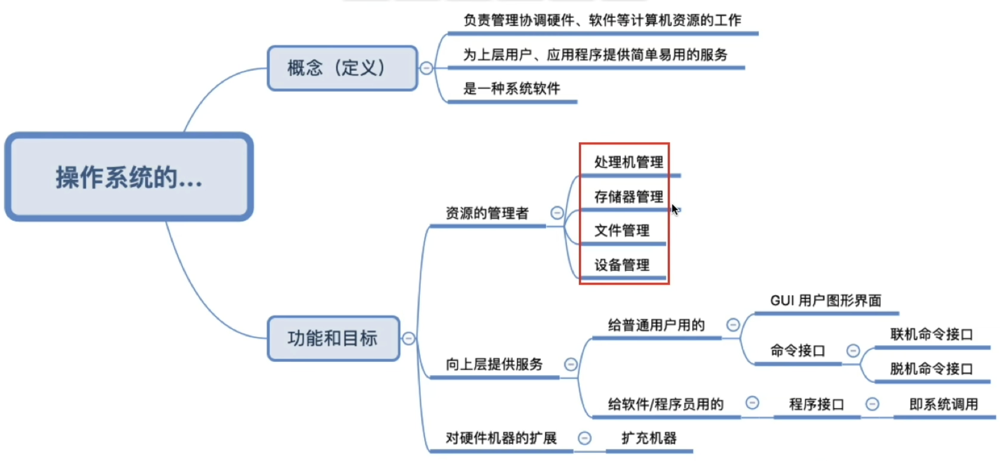
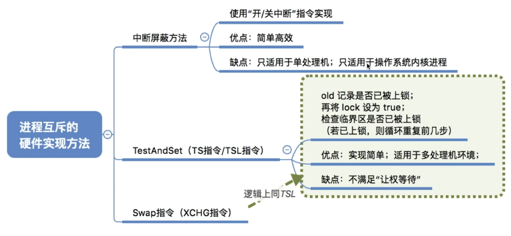
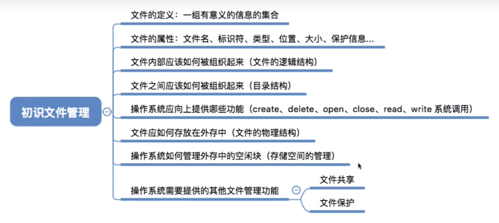
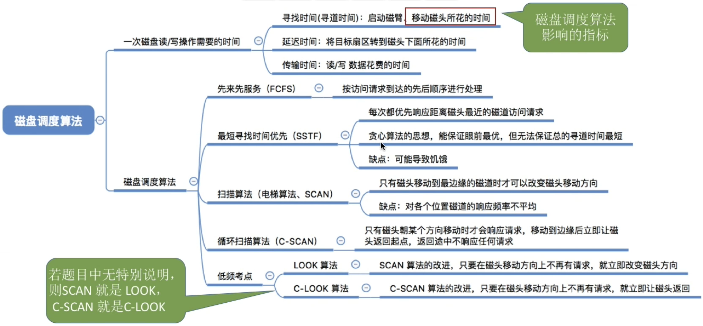

第一章：操作系统概述OS概念、功能和目标OS四个特征并发共享虚拟异步OS发展与分类OS运行机制特权指令 vs. 非特权指令内核态 vs. 用户态内核程序 vs. 应用程序内核 (Kernel)？中断和异常中断机制的诞生与作用中断和异常的概念与分类中断/异常的处理过程OS体系结构传统/简单结构 (无结构)模块化结构分层结构宏内核 vs. 微内核外核OS引导虚拟机第二章：进程与线程进程的概念和特征进程的状态与转换进程的通信线程与进程对比线程的属性线程的实现和多线程模型三种调度进程调度的实现调度算法的评价指标调度算法先来先服务短作业优先高响应比优先时间片轮转优先级调度多级队列调度多级反馈队列调度总结多处理机调度同步和互斥实现临界区互斥方法软件方法硬件方法互斥锁信号量机制信号量机制的应用信号量实现进程互斥信号量实现进程同步信号量实现前驱关系PV操作题目解题思路生产者-消费者问题读者-写者问题哲学家就餐问题管程死锁死锁产生的四个必要条件死锁的处理策略死锁预防 死锁避免 死锁检测与解除 第三章：内存管理程序的链接与装入逻辑地址和物理地址进程的内存映像内存保护与共享覆盖与交换连续分配管理方式单一连续分配固定分区分配动态分区分配基于顺序搜索的分配算法基于索引搜索的动态分区分配算法基本分页存储管理地址变换机构基本地址变换机构具有块表的地址变换机构总结两级页表基本分段存储管理段页式存储管理虚拟内存管理请求分页管理方式页面置换算法页面分配置换策略内存映射文件页框回收虚拟存储器性能影响因素第四章：文件管理文件的定义、属性和分类文件控制块和索引节点文件的基本操作文件的逻辑结构顺序文件索引文件索引顺序文件文件的物理结构连续分配链接分配隐式链接显式链接 - 文件分配表 (FAT)索引分配单级索引多级索引混合索引总结文件保护文件目录文件存储空间管理文件共享文件系统结构虚拟文件系统第五章：输入/输出（I/O）管理I/0设备的概念和分类I/O接口 (即I/O控制器/设备控制器)I/O控制方式I/O软件层次结构缓冲区设备分配与回收分配时应考虑因素四个表格设备分配的步骤SPOOLing技术完整I/O操作举例磁盘结构和管理磁盘的调度算法提高磁盘I/O速度的方法固态硬盘
第一章：操作系统概述
OS概念、功能和目标
操作系统是铺在计算机硬件上的第一层软件，它管理着计算机的所有软硬件资源，并为用户和其他软件提供一个简单易用的接口。
定义：操作系统是控制和管理计算机软硬件资源、合理组织计算机工作流程以及方便用户的程序集合。
两个视角/作用：
资源管理者：管理处理器、内存、文件、I/O设备。
用户与硬件之间的接口：提供命令接口（如shell）、程序接口（系统调用）、图形接口（GUI）。
主要目标：方便性 (对用户)、有效性 (对系统，提高资源利用率和吞吐量)
次要目标：可扩充性 (适应发展)、开放性 (遵循标准)
操作系统为用户与计算机硬件系统之间提供的接口
| 接口类型 | 服务对象 | 使用方式 | 举例 | 核心特征 |
|---|---|---|---|---|
| 命令接口 | 普通用户 | 输入命令 / 批处理文件 | Windows CMD, Linux Shell | 用户直接与OS交互 |
| 程序接口 (系统调用) | 程序员/应用程序 | 在代码中调用函数/过程 | fork(), read(), write() | 程序获取内核服务的唯一途径 |
| 图形用户接口 (GUI) | 普通用户 | 点击图标、菜单 | Windows桌面, Android界面 | 直观、易用、可视化 |
注意：
系统调用是应用程序访问内核功能的唯一接口。它与“中断/异常”密切相关，是实现从用户态到内核态转换的主要手段。
命令接口主要有两种形式：
联机命令接口：交互式。用户输入一条命令，操作系统执行一条，然后立即返回结果。
脱机命令接口 ：批处理。用户事先把一系列命令写在一个批处理文件中，然后一次性提交给操作系统。操作系统会按照文件中的顺序自动执行所有命令，期间不需要用户干预。

OS四个特征
并发
一句话定义： 指两个或多个事件在同一时间间隔内发生。
通俗理解： “宏观上同时，微观上交替”。
与“并行“的区别：
并发: 逻辑上的同时执行。在单核CPU上就能实现，通过时间片快速轮转，让多个进程“雨露均沾”，看起来像在同时运行。
并行 : 物理上的同时执行。必须依赖多核CPU，让多个进程在不同的核心上真正地同时运行。
| 特征 | 并发 | 并行 |
|---|---|---|
| 核心思想 | 宏观同时，微观交替 | 物理上的真正同时 |
| 硬件要求 | 单核CPU即可 | 必须是多核CPU |
| 关系 | 并发是并行的基础，并行是并发的一种特殊形式。 | 在多核CPU上，可以既有并行（多个进程在不同核上），又有并发（一个核上运行多个进程）。 |
一句话总结并发：单核CPU，多个程序“轮流坐庄”，看起来像一起跑。
共享
一句话定义： 系统中的资源可供内存中多个并发执行的进程共同使用。
为什么需要共享？ 因为有了并发。如果系统里只有一个程序在运行，那所有资源都归它独享，也就不存在共享的问题了。正是因为有很多程序想同时运行，资源（如CPU、内存、硬盘）又有限，才需要让它们共享这些资源。
共享的两种方式：
互斥共享：一个资源在同一时刻只允许一个进程访问。比如打印机、摄像头。你总不能让两个Word文档的内容同时打印在一张纸上，那会乱码。这种需要独占的资源被称为临界资源。
同时访问：一个资源在同一时刻允许多个进程访问。比如硬盘上的只读文件（例如电影文件），多个播放器可以同时读取它，互不影响。
一句话总结共享：并发环境下，大家“按规矩”一起用有限的公共资源。
虚拟
一句话定义： 通过某种技术把一个物理实体变为若干个逻辑上的对应物。
核心思想： “一变多”或“多变一”。操作系统利用虚拟技术，为每个用户营造一种“独占”计算机的假象。
虚拟技术的体现：
时分复用技术 ：通过时间片的快速切换，把一个物理CPU虚拟成多个逻辑上的“虚拟CPU”，让每个进程都感觉自己有一个独立的CPU在为它服务。这是对CPU的虚拟化。
空分复用技术：通过虚拟内存技术，把有限的物理内存和部分硬盘空间结合，为每个进程提供一个巨大、独立的逻辑地址空间（比如32位系统下是4GB），让每个进程都感觉自己独享了整个内存。这是对内存的虚拟化。
一句话总结虚拟：明明只有一个，却骗你有好多；明明只有一点，却骗你有很大。
异步
一句话定义： 进程的执行不是一贯到底的，而是“走走停停”，以不可预知的速度向前推进。
为什么会异步？ 因为并发执行的进程会争夺资源。一个进程可能正在CPU上运行，突然需要等待一个数据从硬盘读出来（I/O操作），这时操作系统会剥夺它的CPU使用权，让它去等待，同时让别的进程上CPU。等数据读好了，它再回来排队。
异步的后果： 由于这种走走停停的特性，进程执行的顺序和耗时都是不确定的。比如，你同时运行A和B两个进程，第一次可能是A先执行完，第二次可能就是B先执行完。这种不确定性（或称不可再现性）给程序设计带来了巨大挑战，也是进程同步问题（P/V操作、信号量等）要解决的根本原因。
一句话总结异步：程序走走停停，啥时候走、啥时候停、停多久，都身不由己。
OS发展与分类
| 操作系统类型 | 主要目标 | 核心特征/关键词 | 优缺点 |
|---|---|---|---|
| 多道批处理系统 | 提高资源利用率和系统吞吐量 | 多道、并发、无交互、周期长 | 优：效率高；缺：无交互性 |
| 分时操作系统 | 提供人机交互，缩短响应时间 | 交互性、多路性、时间片轮转 | 优：交互性好；缺：对资源要求高 |
| 实时操作系统 | 及时性、可靠性 | 满足严格时间限制、高可靠 | 优：响应快、可靠；缺：资源利用率可能不高 |
| 网络操作系统 | 网络资源共享和通信 | 互联、通信、非透明 | 优：共享能力强；缺：对网络依赖大 |
| 分布式操作系统 | 将多机系统对用户透明化 | 分布性、透明性、健壮性 | 优：高可靠、高性能；缺：实现复杂 |
OS运行机制

特权指令 vs. 非特权指令
计算机的指令系统中，有一类指令的权力非常大，如果被滥用，可能会导致整个系统崩溃。
特权指令
定义： 指那些不允许用户程序直接使用的、对系统有关键影响的指令。它们只能由操作系统内核来执行。
特点： 危险性高，能直接或间接影响到系统全局。
举例（需要记住类型，而不是具体指令）：
I/O指令： 启动I/O设备、读写端口等（如in, out）。如果任何程序都能随意读写I/O端口，可能会导致设备冲突或数据错乱。
内存管理指令： 设置内存保护、修改页表寄存器等。如果用户程序能随意修改内存映射，它就能访问到其他程序的内存空间，甚至内核空间，造成安全问题。
处理器状态管理指令： 设置程序状态字(PSW)、清空Cache、设置时钟、关中断/开中断、停机等。
一句话总结： 凡是可能影响到“系统安全和稳定”的指令，都是特权指令。
非特权指令
定义： 指那些允许用户程序使用的、不会对系统造成危害的普通指令。
特点： 功能单一，只涉及自身数据的处理，不影响系统整体。
举例：
算术运算指令： 加减乘除。
逻辑运算指令： 与或非。
数据传送指令： 寄存器之间的数据移动。
普通函数调用指令。
一句话总结： 普通的“加减乘除”、“搬运数据”等指令，都是非特权指令。
内核态 vs. 用户态
既然有了两种不同权限的指令，CPU就必须有一种机制来控制谁能执行它们。这种机制就是处理器状态。现代CPU至少有两种状态：
内核态
也称： 核心态、管态、特权态。
定义： CPU处于此状态时，可以执行指令系统中的所有指令，包括所有特权指令和非特权指令。
特点： 拥有最高权限，可以访问任何内存地址和硬件设备。
何时处于内核态： 当操作系统内核程序运行时，CPU就处于内核态。
用户态
也称： 目态。
定义： CPU处于此状态时，只能执行非特权指令。
特点： 权限受限，只能访问自己被分配到的内存空间，无法直接访问硬件。如果它试图执行一条特权指令，CPU硬件会立即发现并产生一个异常 (Trap)，将控制权交给操作系统内核处理（通常会终止这个非法操作的程序）。
何时处于用户态： 当用户应用程序运行时，CPU就处于用户态。
状态切换：
用户态 -> 内核态：是唯一的转换途径，通过中断或异常实现。其中，由应用程序主动发起的系统调用属于异常的一种。这是受控的、正常的转换。
内核态 -> 用户态：是通过执行一条特权指令（如修改PSW）来实现的。这是操作系统在完成服务后主动交出控制权。
处理器状态是如何标识的？ CPU内部，程序状态字寄存器 (PSW) 有一个二进制位（状态位）专门用来标识当前CPU是处于内核态（比如为0）还是用户态（比如为1）。
内核程序 vs. 应用程序
有了处理器状态的区分，我们就可以对计算机上运行的程序进行分类了。
内核程序
定义： 就是操作系统内核本身。它是操作系统的核心部分，负责管理系统资源。
运行状态： 始终运行在内核态。
例子： 进程调度程序、内存管理程序、设备驱动程序等。
应用程序
定义： 指用户为了解决特定问题而编写的程序，以及所有第三方软件。
运行状态： 始终运行在用户态。
例子： 你写的C语言程序、Word、QQ、游戏等。
内核 (Kernel)？
内核是操作系统中最基础、最核心的部分。它是一个计算机程序，负责管理计算机的所有资源，并为上层应用程序提供服务。
层次结构视角： 内核是铺在硬件上的第一层软件，应用程序运行在内核之上。
功能视角： 内核实现了操作系统的核心功能，如：
时钟管理： 计时、提供标准时间。
中断处理： 响应硬件发出的中断信号。
原语 (Primitive)： 一些具有原子性的、不可中断的底层操作过程。
核心功能模块： 进程管理、存储器管理、文件管理、I/O管理等。
中断和异常
中断机制的诞生与作用
首先，我们要明白中断机制是为什么而生的。
诞生背景： 在早期的计算机中，CPU要不断地去轮询 (Polling) I/O设备，看它们是否完成了任务（比如，"键盘，你收到输入了吗？" "硬盘，你读完数据了吗？"）。这种方式极大地浪费了CPU资源，因为大部分时间设备都在忙，CPU的询问都是徒劳的。
核心思想： 变“CPU主动询问”为“设备主动报告”。CPU不再去管I/O设备，而是专心做自己的计算。当I/O设备完成了任务后，它会主动向CPU发送一个信号，来“打断”CPU当前的工作，告诉它：“我搞定了，快来处理一下！”。
作用/意义：
实现并发： 是多道程序并发执行的基础。当中断发生时，CPU可以从一个进程切换到另一个进程，提高了CPU利用率。
实现实时处理： 使系统能及时响应外部事件。
提供内核入口： 是应用程序从用户态进入内核态的唯一途径。
中断和异常的概念与分类
我们常把它们合称为“中断”。它们的共同点是，都会打断CPU当前指令的执行，并跳转到相应的处理程序。
核心区别：信号来源
中断 (Interrupt)：也称外中断。信号来源于CPU外部，与当前执行的指令无关。
异常 (Exception)：也称内中断。信号来源于CPU内部，由当前执行的指令本身引起。
中断：中断的信号源来自CPU和内存之外的硬件设备。
I/O中断： 最常见的中断。由I/O设备完成操作或发生错误时发出。例如，键盘输入一个字符、打印机打印完成、网卡收到一个数据包。
时钟中断： 由CPU内部的时钟部件定时发出。这是实现时间片轮转调度的根本。操作系统设定一个时间片（比如10ms），时钟每隔10ms就中断一次CPU，操作系统内核借此机会检查当前进程是否时间片用完，决定是否进行进程调度。
硬件故障中断： 如电源故障、内存校验错误等。
异常：异常的信号源来自CPU内部，是执行当前指令时出现的问题。
故障 (Fault)： 是可以被修复的错误。处理程序修复错误后，会返回到发生故障的指令，重新执行它。
例子： 缺页故障。这是虚拟内存中的核心概念。程序要访问的页面不在内存中，会触发缺页故障。操作系统会把该页从硬盘调入内存，然后返回到刚才的指令，重新执行，这次就能成功访问了。
陷阱/自陷 (Trap)： 是有意为之的异常，目的是主动陷入内核。处理完成后，会返回到发生陷阱指令的下一条指令继续执行。
例子： 系统调用。应用程序想请求内核服务（如读文件），会故意执行一条trap指令，主动引发一个异常，从而将CPU控制权交给内核。内核处理完请求后，返回到应用程序的下一条指令。
终止 (Abort)： 是不可恢复的严重错误。处理程序会直接终止当前进程。
例子： 整数除以0、非法访问内存地址、指令译码错误等。
中断/异常的处理过程
无论是中断还是异常，CPU在检测到信号后，都会暂停当前任务，转而执行一个标准化的处理流程。这个过程是由硬件和软件协同完成的。
【硬件部分 - 自动完成】
识别中断源： CPU通过中断信号线或内部状态识别是哪个设备或哪个原因引发了中断/异常。
保护现场： 这是至关重要的一步。CPU会自动将当前被打断的进程的关键上下文（主要是程序计数器PC和程序状态字PSW）保存到内核栈中。这样做的目的是为了当中断处理完成后，能够准确地回到被打断的地方继续执行。
状态切换： CPU将处理器状态从用户态切换到内核态，并将PC指向中断处理程序的入口地址。这个地址通常存储在一个叫做中断向量表 的固定内存区域中。
【软件部分 - 操作系统内核执行】
执行中断处理程序： 操作系统接管CPU，开始执行对应的中断服务例程。
处理中断事件：
如果是I/O中断，可能会唤醒等待该I/O的进程。
如果是时钟中断，可能会进行进程调度。
如果是系统调用，会执行用户请求的服务。
如果是缺页故障，会进行页面置换。
恢复现场： 中断处理程序执行完毕后，会从内核栈中恢复之前保存的PC和PSW。
返回： 执行一条特殊的“中断返回”指令，将处理器状态从内核态切回用户态，并根据恢复的PC值，返回到被打断的程序继续执行。
OS体系结构
传统/简单结构 (无结构)
代表： 早期的操作系统，如 MS-DOS。
特点：
内部没有清晰的模块划分，所有功能模块都杂糅在一起，互相调用。
整个操作系统就是一个巨大的、单一的程序。
优点：
简单，因为没有结构限制。
模块间的通信效率高，因为是直接的函数调用。
缺点：
混乱、难以维护： 一个小小的改动可能会引发意想不到的连锁反应。
扩展性差： 增加新功能非常困难。
可靠性差： 任何一个部分出错，都可能导致整个系统崩溃。
比喻： 就像一碗意大利面，所有面条（功能）都缠绕在一起，想抽出一根而不影响其他的几乎不可能。
模块化结构
这是对无结构的一种改进，也是现代操作系统普遍采用的基本思想。
核心思想： 将操作系统按照功能划分为若干个具有一定独立性的模块 (Module)。每个模块负责一部分特定的功能（如进程管理模块、内存管理模块），并提供清晰的接口供其他模块调用。
特点：
高内聚，低耦合。
接口清晰。
优点：
易于维护和修改： 修改一个模块通常不会影响其他模块。
增强了可扩展性： 增加新功能只需增加一个新模块。
便于团队协作开发。
缺点： 模块间的通信开销比无结构要大一些。
比喻： 就像乐高积木，每个积木块（模块）有标准接口，可以自由组合、替换，搭建出复杂的系统。
注意： 模块化是一种设计思想，它可以应用于下面要讲的宏内核和微内核等具体结构中。
分层结构
分层结构是模块化的一种特殊实现，它对模块的组织方式有更严格的规定。
核心思想： 将操作系统自底向上分为若干个层次。每一层只能使用其下一层提供的服务和接口，并向其上一层提供服务和接口。
层次划分（一个例子）：
第 N 层：用户界面
...
第 2 层：内存管理
第 1 层：CPU调度
第 0 层：硬件
优点：
结构清晰，易于调试： 调试时可以逐层进行，第 i 层的正确性只需依赖第 i-1 层的正确性。
易于验证和维护。
缺点：
效率较低： 用户请求一个服务可能需要穿越多个层次，每次穿越都有一定的开销。
层次定义困难： 如何合理地划分层次本身就是一个难题。比如，内存管理需要磁盘I/O（虚拟内存），而磁盘驱动又需要内存缓冲，这就形成了循环依赖，破坏了严格的分层。
比喻： 像一个公司的组织架构，员工（上层）只能向自己的直接领导（下层）汇报工作和请求资源。
宏内核 vs. 微内核
这是现代操作系统体系结构中最重要、最常考的一对概念。它们的根本区别在于：哪些功能应该放在内核态运行，哪些应该放在用户态运行。
宏内核
核心思想： 将操作系统绝大多数的核心功能模块（如进程调度、内存管理、文件系统、设备驱动等）都作为一个紧密耦合的整体，运行在内核态。
结构： 内核是一个庞大的、单一的二进制程序。
代表： Linux、Unix、Windows (早期版本及后续演化)。
工作方式： 应用程序通过系统调用请求服务，在内核态内部，各功能模块之间通过简单的函数调用进行交互。
优点：
性能高，效率好： 因为内核内部的通信是直接的函数调用，开销非常小。
缺点：
可靠性差： 任何一个模块（尤其是设备驱动）出错，都可能导致整个内核崩溃（蓝屏/Kernel Panic）。
可维护性和可扩展性差： 内核代码庞大且耦合度高，修改或增加功能很困难。
内核臃肿。
微内核
核心思想： “少即是多”。只将操作系统最最基本的功能（如进程/线程管理、低级内存管理、中断处理）保留在内核中，而将其他大部分服务（如文件系统、设备驱动、网络协议栈等）作为独立的服务器进程，移到用户态运行。
结构： 一个非常小巧的内核，加上一堆运行在用户态的服务器进程。
代表： QNX、Mach (macOS的部分基础)、Minix、鸿蒙OS (HarmonyOS)。
工作方式： 应用程序请求服务时，通过微内核提供的消息传递 机制与相应的服务器进程通信。
优点：
可靠性和安全性高： 一个用户态的服务器进程崩溃，不会影响内核和其他服务器，只需重启该进程即可。
可扩展性和灵活性好： 增加新功能只需增加一个新的服务器进程，无需修改内核。
可移植性强： 移植系统时，只需修改小巧的微内核以适应新硬件。
缺点：
性能较低： 用户进程和服务器进程之间的通信需要频繁地在用户态和内核态之间切换，并通过内核进行消息传递，这个开销远大于宏内核中的函数调用。
| 特性 | 宏内核 | 微内核 |
|---|---|---|
| 内核大小 | 大 | 小 |
| 内核功能 | 多（进程、内存、文件、驱动等） | 少（最基本的IPC、调度、低级内存） |
| 服务位置 | 大部分在内核态 | 大部分在用户态（服务器进程） |
| 通信机制 | 函数调用 | 消息传递 (IPC) |
| 性能 | 高 | 低 |
| 可靠性 | 低 | 高 |
| 扩展性/灵活性 | 差 | 好 |
| 代表 | Linux, Unix, Windows | QNX, Minix, HarmonyOS |
外核
这是一种比较激进和实验性的结构，旨在将硬件资源的控制权尽可能多地交给应用程序。
核心思想： 内核只负责安全地复用硬件资源，即保证资源保护和隔离，而不提供任何高级的抽象（如文件、虚拟内存）。
工作方式： 外核将硬件资源（如磁盘块、内存页）直接暴露给应用程序，由应用程序或其链接的库操作系统 (LibOS) 自己来决定如何管理这些资源。
优点：
灵活性和性能潜力巨大： 应用程序可以根据自身需求，定制最高效的资源管理策略，避免了传统内核“一刀切”抽象带来的性能损失。
缺点：
设计复杂： 为应用程序编写高效且正确的资源管理代码非常困难。
安全性难以保证。
比喻： 房东（外核）只负责把毛坯房租给你，并保证你不会砸了承重墙、不会影响到邻居。至于房子里怎么装修、怎么布线、怎么摆放家具（如何实现文件系统、内存管理），完全由你自己（应用程序）决定。
OS引导
阶段一：硬件启动与BIOS自检
激活CPU -> 执行BIOS
动作：计算机通电，CPU被激活，强制执行ROM中固化的BIOS程序的第一条指令。
核心：控制权由硬件移交给固件BIOS。
关键词：通电, CPU, ROM, BIOS
BIOS -> 执行加电自检 (POST)
动作：BIOS在内存低地址处建立中断向量表，然后对关键硬件（CPU、内存、显卡等）进行检测，确保其功能正常。
核心：硬件的健康检查与基础软件环境（中断）的准备。
关键词：POST, 硬件检测, 中断向量表
阶段二：定位引导设备与主引导记录
BIOS -> 查找启动设备
动作：BIOS根据CMOS中存储的启动顺序（Boot Sequence），查找第一个可引导的存储设备（如硬盘）。
核心：确定操作系统的“家”在哪块物理设备上。
关键词：CMOS, 启动顺序, 启动设备
BIOS -> 加载主引导记录 (MBR)
动作：BIOS读取启动设备的第一个扇区（0号扇区，512字节）到内存，并将CPU控制权移交给这段程序。
核心：BIOS完成其历史使命，控制权首次移交给硬盘上的软件代码。
关键词：主引导记录 (MBR), 0号扇区, 控制权移交
阶段三：MBR引导与PBR加载
MBR -> 定位活动分区
动作：MBR中的代码执行，扫描其内部的硬盘分区表，找到被标记为“活动”的分区。
核心：MBR不负责加载OS，只负责找到哪个分区里存着OS。
关键词：分区表, 活动分区 (Active Partition)
MBR -> 加载分区引导记录 (PBR)
动作：MBR读取活动分区的第一个扇区（即PBR）到内存，并将控制权移交给PBR。
核心：引导的“接力棒”从整个硬盘的引导程序（MBR）交给了特定分区的引导程序（PBR）。
关键词：分区引导记录 (PBR), 活动分区的第一个扇区
阶段四：启动管理器与内核加载
PBR -> 加载启动管理器 (Boot Manager)
动作：PBR中的代码在本分区的文件系统中，找到并加载功能更完整的启动管理器（如Linux的GRUB）。控制权移交给启动管理器。
核心：从简单的扇区引导代码，过渡到能够识别文件系统的复杂引导程序。
关键词：启动管理器, GRUB, bootmgr
启动管理器 -> 加载操作系统内核
动作：启动管理器根据其配置文件，从文件系统中找到操作系统内核文件（如vmlinuz），将其完整加载到内存，并将CPU控制权最终移交给内核。
核心：引导过程结束，操作系统正式接管计算机。
关键词：操作系统内核 (Kernel), 最终控制权移交
虚拟机
VMM（Virtual Machine Monitor），也常被称为Hypervisor，它是一层软件，用于创建和运行虚拟机（VMs）。它允许一台物理计算机（Host）同时运行多个独立的虚拟机，每个虚拟机（Guest）都有自己的操作系统和应用。
第一类 VMM (Type-1 Hypervisor)
核心架构：
VMM 直接安装在物理硬件之上，它本身就是一个精简的操作系统，负责管理硬件资源。
所有的客户机操作系统（Guest OS）都运行在VMM之上，作为VMM的上层应用。
结构图：[ Guest OS ] [ Guest OS ] ... -> [ VMM ] -> [ 硬件 ]
特点详解：
物理资源控制权：直接控制。VMM就是硬件的直接管理者，它拥有最高的权限，能直接、高效地调度和分配CPU、内存、磁盘等物理资源。
资源分配方式：类“外核”方式。它直接将未经过多层抽象的物理硬件资源（或硬件分区）分配给虚拟机。例如，它可以直接将一块物理网卡或一个磁盘分区分配给某个VM。
性能：性能更好。因为VMM层非常薄，且直接与硬件交互，没有中间操作系统（Host OS）带来的性能开销。虚拟机的性能非常接近物理机，延迟低，I/O效率高。
可支持虚拟机数量：更多。由于VMM本身占用的资源极少，大部分物理资源都可以用来运行虚拟机。它不需要和一个功能完备的Host OS竞争资源。
可迁移性：相对较差。迁移通常需要更复杂的集群管理软件支持，因为它与硬件耦合更紧密。
运行模式：运行在最高特权级（Ring 0）。VMM本身就是内核，可以直接执行所有特权指令，对硬件进行完全控制。
第二类 VMM (Type-2 Hypervisor)
平时使用的虚拟机软件属于第二类VMM。
核心架构：
VMM 作为一个应用程序，安装并运行在一个常规的操作系统（称为宿主操作系统 Host OS）之上。
VMM通过Host OS来间接访问和管理物理硬件。
结构图：[ Guest OS ] -> [ VMM App ] -> [ Host OS ] -> [ 硬件 ]
特点详解：
物理资源控制权：间接控制。VMM本身是一个用户进程，它需要通过Host OS的系统调用来申请和使用硬件资源。所有资源分配都由Host OS掌控。
资源分配方式：文件化/虚拟化。虚拟机的虚拟磁盘通常是Host OS上的一个大文件。分配给虚拟机的内存也是Host OS管理的虚拟内存。
性能：性能更差。因为在虚拟机和物理硬件之间隔了一个完整的Host OS。Guest OS的I/O请求需要经过 VMM -> Host OS -> 硬件 的转换，路径更长，开销更大。
可支持虚拟机数量：更少。因为Host OS本身及其上运行的其他应用程序就需要消耗大量的物理资源，留给虚拟机的资源就变少了。
可迁移性：更好。由于整个虚拟机被打包成几个文件，迁移一个虚拟机就像拷贝文件一样简单。只需将镜像文件复制到另一台装有相同VMM软件的电脑上即可运行，非常灵活。
运行模式：用户态 + 内核态结合。VMM的主体程序运行在用户态，但它需要安装一些内核模块或驱动（运行在内核态）来辅助它完成一些特权操作，例如截获Guest OS的系统调用，并将其转换为对Host OS的系统调用。
第二章：进程与线程
进程的概念和特征
进程是：
资源分配的基本单位：操作系统以进程为单位分配系统资源，如内存空间、文件句柄、I/O设备等。当一个进程被创建时，系统会为其分配一套独立的资源。
独立调度的基本单位：CPU调度程序在切换任务时，选择的是一个进程（或稍后会学到的线程），让它占用CPU运行。
进程与程序的区别
| 特性 | 程序 | 进程 |
|---|---|---|
| 定 义 | 一组有序的指令集合，是静态的实体，通常以文件形式存储在磁盘上。 | 程序的一次执行过程，是动态的实体，是操作系统进行资源分配和调度的基本单位。 |
| 状 态 | 静态的 (Static) | 动态的 (Dynamic)，有创建、就绪、运行、阻塞、终止等状态，并有状态之间的转换。 |
| 生命周期 | 永久的 (只要不删除文件) | 暂时的 (随执行的开始而创建，随执行的结束而消亡) |
| 组 成 | 仅包含指令和数据。 | 由 程序段、数据段、PCB (进程控制块) 三部分组成。PCB是进程存在的唯一标志。 |
| 对应关系 | 一个程序可以对应多个进程 (例如，多次打开同一个应用程序)。 | 一个进程只能对应一个程序。 |
| 资源占用 | 静态地占用磁盘空间。 | 动态地占用内存、CPU、I/O设备等系统资源。 |
进程的组成
1. PCB ( 进程控制块)
核心作用：进程存在的唯一标志。 操作系统通过PCB来识别和管理进程。当一个进程被创建时，系统会为其创建一个PCB；当进程结束时，其PCB被回收。系统中有多少个进程，就有多少个PCB。
内容：PCB就像是进程的“身份证”和“档案”，包含了操作系统管理进程所需的所有信息。
进程描述信息：如进程标识符 (PID)、用户标识符 (UID)。
进程控制和管理信息：如进程当前状态（就绪、运行、阻塞）、进程优先级。
资源分配清单：如进程拥有的内存地址空间、打开的文件列表、使用的I/O设备。
处理机相关信息 (上下文信息)：当进程被切换时，需要保存的CPU现场信息，如各个寄存器（PC程序计数器、指令寄存器、通用寄存器）的值、栈指针等。这些信息使得进程被换下后，下次还能从断点处继续执行。
注：进程的管理者（操作系统）所需的数据都在PCB中。
2. 程序段 ：存放程序代码（机器指令）的部分。这部分在内存中是只读的，可以被同一程序的多个进程共享。
3. 数据段 ：
定义：存放进程在运行过程中产生的各种数据。
全局变量、静态变量。
堆 (Heap)：用于动态分配的内存(malloc)。
栈 (Stack)：用于存放局部变量、函数参数、返回地址等。
进程的特征
1. 动态性
核心：进程的最基本特性。
解释：进程是动态产生、变化和消亡的。它有自己的生命周期，与程序的静态性形成鲜明对比。
2. 并发性
解释：指多个进程实体在同一时间间隔内可以同时存在并向前推进。在单核CPU上，这是通过CPU快速地在多个进程之间切换（宏观上并行，微观上串行）实现的。在多核CPU上，可以实现真正的并行（同一时刻有多个进程在不同核心上运行）。
3. 独立性
核心：进程是能独立运行、独立获得资源、独立接受调度的基本单位。
解释：每个进程拥有自己独立的地址空间和系统资源，一个进程的运行通常不会直接影响到其他进程，这为操作系统提供了保护和隔离。
4. 异步性
解释：各进程按各自独立的、不可预知的速度向前推进。进程的执行顺序和执行时间是不确定的。
影响：这种异步性是导致并发程序设计困难的根源。由于执行速度不可预知，可能会导致对共享资源的访问出现与时序相关的错误（如竞态条件），因此需要引入进程同步机制（如信号量、锁）来解决。
5. 结构性
解释：进程不是一个无序的实体，它具有明确的结构，即由PCB、程序段、数据段构成。
进程的状态与转换
进程的五状态模型
创建态
定义：进程正在被创建，操作系统正在为其执行一系列的初始化工作。
说明：这是一个短暂的中间状态。在此状态下，操作系统需要：
为进程分配一个唯一的进程标识符 (PID)。
创建并初始化进程控制块 (PCB)。
为进程分配其运行所需的资源，如内存空间。
关键点：此时进程还未被加载到就绪队列中，尚不具备运行条件。
就绪态
定义：进程已经具备了运行所需的所有资源（除了CPU），只等待操作系统分配CPU，就可以立即运行。
关键点：所有处于就绪态的进程通常会被组织在一个队列中，称为就绪队列。
运行态
定义：进程正在占用CPU，其指令正在处理器上执行。
关键点：在单核CPU系统中，任意时刻最多只有一个进程处于运行态。在多核CPU系统中，则最多可以有与CPU核心数相等的进程处于运行态。
阻塞态
定义：进程因等待某一事件的发生而暂时无法继续执行。即使此时CPU空闲，该进程也无法运行。
关键点：阻塞是进程的一种主动行为。它等待的事件不是CPU，而是其他资源或信号，如I/O操作完成、等待用户输入、等待某个锁被释放等。
终止态
定义：进程已经执行完毕或因某种原因（如出错、被系统杀死）而终止，正在等待操作系统进行最后的资源回收工作。
说明：进程到达此状态后，并不会立即从系统中消失。操作系统需要：
回收该进程所占有的全部资源（内存、打开的文件等）。
撤销其在系统中的PCB。
状态转换及触发事件
| 状态转换 | 触发事件/原因 | 核心要点 |
|---|---|---|
| 创建态 → 就绪态 | OS完成资源分配和初始化 | 进程被“准入”系统参与调度。 |
| 就绪态 ↔ 运行态 | 调度 / 时间片用完或抢占 | 均与CPU的分配和剥夺直接相关。 |
| 运行态 → 阻塞态 | 进程主动请求并等待I/O等事件 | 进程无法继续执行，主动让出CPU。 |
| 阻塞态 → 就绪态 | 等待的事件完成 | 关键考点：不能直接到运行态。 |
| 运行态 → 终止态 | 进程正常或异常结束 | 进程生命周期即将结束。 |
| 不可能的转换 | 阻塞态 → 运行态； 就绪态 → 阻塞态 | 阻塞的进程必须先变就绪；就绪的进程只等CPU，不会去等其他事件。 |
进程的通信
注：这三种进程通信方式为高级通信方式（以较高的速率传输大量的数据），PV操作属于低级通信方式。
| 考点类别 | 核心内容 | 备注 |
|---|---|---|
| 核心定义 | 进程间通信的一种异步通知机制，是“软件中断”。 | 与管道、共享内存等传输大量数据的方式不同。 |
| 存储位置 | 进程PCB中的位图。 | 区分“待处理信号”和“阻塞信号”两个位图。 |
| 处理时机 | 从内核态切换到用户态时。 | 这是最重要的考点之一，必须牢记。 |
| 处理方法 | 1. 默认； 2. 忽略； 3. 用户自定义。 | 用户自定义会覆盖默认行为。 |
| 关键特性 | 1. 信号可能丢失（因为用1bit记录）。 2. SIGKILL和SIGSTOP不可被捕获或阻塞。 | 这是信号机制的重要局限性和特权性。 |
线程与进程对比

| 对比维度 | 进程 (Process) | 线程 (Thread) |
|---|---|---|
| 基本单位 | 资源分配的基本单位。 | CPU调度和执行的基本单位。 |
| 资源拥有 | 拥有独立的地址空间和系统资源。 | 不拥有资源，与同进程的其他线程共享进程的资源。 |
| 开销 | 高。创建和销毁进程、切换进程的成本都很大。 | 低。创建、销毁、切换线程的成本都很小，因为不涉及地址空间的切换。 |
| 通信 | 进程间通信 (IPC) 复杂，需要借助内核（如管道、共享内存、消息队列）。 | 线程间通信简单，可以直接读写共享的全局变量和堆内存。 |
| 独立性/隔离性 | 强。一个进程崩溃通常不会影响其他进程。 | 弱。一个线程的崩溃（如非法内存访问）会导致整个进程（包括所有其他线程）崩溃。 |
| 并发性 | 进程之间可以并发执行。 | 同一进程内的多个线程之间可以并发执行，不同进程的线程也可以并发执行。 |
| 包含关系 | 进程是线程的“容器”。一个进程至少有一个线程（主线程）。 | 线程存在于进程之内。 |
线程的属性
线程的实现和多线程模型
用户级线程
核心思想：线程的管理完全由用户空间的线程库来完成，操作系统内核对此一无所知。内核仍然只把整个实体看作一个单独的进程（或单个内核线程）。
管理：线程的创建、销毁、切换和调度都在用户态进行，不需要系统调用，速度极快。线程库负责维护每个线程的TCB、寄存器上下文等信息。
优点：
高效快速：所有线程管理操作都在用户空间完成，无需切换到内核态，开销极小。
高度灵活：可以实现自定义的调度算法。
平台无关：只要有对应的线程库，就可以在任何操作系统上运行。
缺点 (致命)：
阻塞问题：如果一个用户级线程发起了阻塞型系统调用（如read文件），内核会阻塞整个进程，导致该进程内的所有其他线程都无法执行。
无法利用多核：内核只认为这是一个单线程进程，所以无论有多少个CPU核心，该进程内的多个用户级线程也只能在一个核心上分时运行，无法实现真正的并行。
内核级线程
核心思想：线程的管理工作完全由操作系统内核来完成。内核能够识别、创建并调度每一个线程。
管理：线程的创建、切换和管理都是通过系统调用由内核完成。内核为每个线程维护一个TCB。
优点：
解决阻塞问题：当一个内核级线程因为阻塞型系统调用而阻塞时，内核可以调度该进程内的其他线程到CPU上运行。
可利用多核：内核可以将同一个进程内的多个线程调度到不同的CPU核心上并行执行。
缺点：
开销较大：每个线程管理操作（创建、切换）都需要从用户态切换到内核态，开销远大于用户级线程。
| 对比维度 | 多对一模型 (用户级线程) | 一对一模型 (内核级线程) | 多对多模型 (组合) |
|---|---|---|---|
| 管理方 | 用户空间线程库 | 操作系统内核 | 用户库 + 内核 |
| 开销 | 小 (无系统调用) | 大 (需系统调用) | 居中 |
| 阻塞影响 | 一个线程阻塞，整个进程阻塞 | 一个线程阻塞，不影响其他线程 | 一个线程阻塞，不影响其他线程 |
| 并行能力 | 不能利用多核并行 | 能充分利用多核并行 | 能利用多核并行 |
| 实现复杂性 | 简单 | 居中 | 非常复杂 |
| 当前主流 | 较少使用 | 主流 (Linux, Windows) | 已不常用 |
三种调度
| 调度级别 | 别名 | 核心任务 | 调度对象 | 发生位置 | 发生频率 | 对进程状态的影响 |
|---|---|---|---|---|---|---|
| 高级调度 | 作业调度 | 从外存的后备队列中，按一定算法挑选合适的作业，为其分配资源、创建进程，并调入内存。 | 作业 | 外存 → 内存 | 最低 (分钟级) | 无 → 创建态 → 就绪态 (从无到有) |
| 中级调度 | 内存调度 | 从挂起队列中选择合适的进程，将其换入内存，使其恢复活动状态。反之，也可将内存中进程换出至外存。 | 进程 | 外存 ↔ 内存 (交换 Swap) | 中等 (秒级) | 挂起态 → 就绪/阻塞态 (例如: 挂起就绪→就绪, 挂起阻塞→阻塞) |
| 低级调度 | 进程调度 / CPU调度 | 从内存的就绪队列中，按一定算法选择一个进程，为其分配CPU。 | 进程/线程 | 内存 → CPU | 最高 (毫秒级) | 就绪态 → 运行态 |
| 考点类别 | 核心内容 |
|---|---|
| 调度目的 | 高级：控制并发度；中级：提高内存利用率；低级：分配CPU。 |
| 调度频率 | 低级 (最高) >> 中级 (中等) > 高级 (最低)。 |
| 面向对象 | 高级面向作业，中级和低级面向进程。 |
| 系统必要性 | 低级调度是必需的。高级和中级调度是可选的，取决于系统设计。 |
进程调度的实现

进程上下文切换的流程：
进程切换的核心操作，指的是 CPU 从一个进程转移到另一个进程时，需要保存当前进程的状态并恢复另一个进程的状态。
上下文的表示: 进程的上下文通过 进程控制块 (PCB) 来表示，它包含了：
CPU 寄存器的值
进程状态（如运行、就绪、阻塞）
内存管理信息
上下文切换的流程:
挂起一个进程：将当前 CPU 的上下文（包括程序计数器和其他寄存器）保存到该进程的 PCB 中。
移动进程PCB：将该进程的 PCB 移入相应的队列，例如就绪队列或阻塞队列。
选择新进程：操作系统的调度程序选择另一个进程来执行，并更新其 PCB（通常是将其状态设置为“运行”）。
恢复新进程：恢复新进程的 CPU 上下文（从其 PCB 中加载寄存器等信息到 CPU）。
跳转执行：程序跳转到新进程 PCB 中程序计数器所指向的位置开始执行。
核心本质: 在切换过程中，进程的运行环境发生了实质性的变化。
注意：
上下文切换并非没有代价，它会消耗系统资源。
区分上下文切换（CPU 的控制权从一个进程转移到另一个不同的进程）和模式切换（CPU 的运行状态在 用户态和 内核态之间的切换）。
调度算法的评价指标
| 指标名称 | 定义 | 计算公式 | 核心意义 |
|---|---|---|---|
| 周转时间 | 指从作业/进程提交(到达)到完成所花费的总时间。 | 周转时间 = 完成时间 - 到达时间 | 衡量一个任务从开始到结束的总耗时，包含等待时间和执行时间。 |
| 平均周转时间 | 所有作业/进程周转时间的平均值。 | 平均周转时间 = (Σ 各进程周转时间) / 进程总数 | 衡量算法对所有任务的整体性能。 |
| 带权周转时间 | 周转时间与该作业/进程实际运行时间的比值。 | 带权周转时间 = 周转时间 / 服务时间 | 衡量任务的相对等待时间。值越小，表示用户体验越好（短作业没等太久）。 |
| 平均带权周转时间 | 所有作业/进程带权周转时间的平均值。 | 平均带权周转时间 = (Σ 各进程带权周转时间) / 进程总数 | 衡量算法的公平性和对短作业的友好程度。 |
例子：
| 进程 | 到达时间 | 服务时间 | 完成时间 | 周转时间 (完成-到达) | 带权周转时间 (周转/服务) |
|---|---|---|---|---|---|
| P1 | 0 | 7 | 7 | 7 - 0 = 7 | 7 / 7 = 1.0 |
| P2 | 2 | 4 | 11 | 11 - 2 = 9 | 9 / 4 = 2.25 |
| P3 | 4 | 1 | 12 | 12 - 4 = 8 | 8 / 1 = 8.0 |
| P4 | 5 | 4 | 16 | 16 - 5 = 11 | 11 / 4 = 2.75 |
计算平均周转时间
总周转时间：7 + 9 + 8 + 11 = 35
除以进程数（4）：35 / 4 = 8.75
计算平均带权周转时间
将它们相加得到总带权周转时间：1.0 + 2.25 + 8.0 + 2.75 = 14.0
除以进程数（4）：14.0 / 4 = 3.5
调度算法
先来先服务
短作业优先
高响应比优先
时间片轮转
| 特性 | 时间片太小 | 时间片太大 | 理想的时间片 |
|---|---|---|---|
| 优点 | 响应时间快，用户体验好 | 系统开销小，吞吐量高 | 响应时间和系统开销之间的良好平衡 |
| 缺点 | 进程切换开销大，CPU效率低 | 响应时间慢，对短作业不公平 | - |
| 算法退化 | - | 退化为 FCFS 算法 | - |
优先级调度
多级队列调度
多级反馈队列调度
总结
| 特性 | 先来先服务 (FCFS) | 短作业优先 (SJF/SRTF最短剩余时间) | 高响应比优先 | 优先级调度 | 时间片轮转 (RR) | 多级队列调度 | 多级反馈队列 |
|---|---|---|---|---|---|---|---|
| 能否可抢占 | 否 | 可以 (SRTF) / 否 (SJF) | 否 | 可以 (抢占式) / 否 (非抢占式) | 可以 | 队列间可抢占 | 可以 |
| 优点 | 绝对公平，实现简单 | 平均等待/周转时间最短 | 兼顾长短作业，性能均衡 | 灵活，可根据任务紧急程度划分 | 公平，响应时间快，适合交互 | 灵活，可对不同类型进程用不同算法 | 综合性能最好，兼顾各方需求，无需预知运行时间 |
| 缺点 | 不利于短作业 | 预估运行时间困难；长作业可能饥饿 | 计算响应比有额外开销 | 低优先级进程可能饥饿 | 上下文切换开销大；平均周转时间较长 | 不够灵活，进程无法在队列间移动 | 实现最复杂，调度开销大，参数选择困难 |
| 是否会导致饥饿 | 不会 | 会 (对长作业) | 不会 | 会 (对低优先级) | 不会 | 会 (对低优先级队列) | 通常不会 |
| 适用于 | 早期批处理系统 | 批处理系统 | 批处理系统 | 实时系统、有明确优先级需求的系统 | 分时系统、交互式系统 | 需要区分不同类型进程的系统 | 现代通用操作系统 |
多处理机调度
同步和互斥
实现临界区互斥方法
软件方法
方法一：单标志法
核心思想: 通过一个变量来严格规定由哪个进程进入临界区，在进入区只检查轮到谁的标志，在退出区把临界区的使用权转交给另一个进程。
伪代码实现 (以两个进程 P0 和 P1 为例):
xint turn = 0; // 全局变量，表示允许进入的进程号
// 进程 P0void process_P0() { while (true) { // --- 进入区 --- while (turn != 0); // 忙等待，直到轮到自己
// --- 临界区 --- // ... 访问临界资源 ...
// --- 退出区 --- turn = 1; // 将使用权交给 P1
// --- 剩余区 --- }}
// 进程 P1 的代码与 P0 类似满足“互斥”: turn 的值在同一时刻只能是0或1，保证了P0和P1不会同时进入临界区。
违反“空闲让进”: 进程必须严格轮流进入。如果P1暂时不访问临界区，而P0想再次访问，它也必须等到P1访问完后才能进入。即使临界区是空闲的，P0也无法进入，这违背了“空闲让进”原则。
方法二：双标志先检查法
核心思想: 在进入区先检查对方是否想进入，若对方不想，自己再“上锁”（表明自己想进入）；退出区则“解锁”。
伪代码实现:
xxxxxxxxxxbool flag[2] = {false, false}; // 全局数组，flag[i]=true表示Pi想进入
// 进程 P0void process_P0() { while (true) { // --- 进入区 --- while (flag[1]); // 1. 先检查P1是否想进入 flag[0] = true; // 2. 表明自己想进入
// --- 临界区 --- // ... 访问临界资源 ... // --- 退出区 --- flag[0] = false; // 解锁
// --- 剩余区 --- }}
// 进程 P1 的代码与 P0 类似违反“忙则等待”: 这是“检查”和“上锁”操作分离导致的典型错误。
出错场景: P0执行while(flag[1])，发现flag[1]为false。此时发生进程切换，P1开始运行，它也检查发现flag[0]为false。然后P1设置flag[1]=true并进入临界区。之后P0恢复运行，它接着上一步，设置flag[0]=true也进入了临界区。导致两个进程同时在临界区内。
方法三：双标志后检查法
核心思想: 在进入区先“加锁”（表明自己想进入），然后再检查对方是否也想进入；退出区则“解锁”。
伪代码实现:
xxxxxxxxxxbool flag[2] = {false, false}; // 全局数组
// 进程 P0void process_P0() { while (true) { // --- 进入区 --- flag[0] = true; // 1. 先表明自己想进入 while (flag[1]); // 2. 再检查P1是否也想进入
// --- 临界区 ---
// --- 退出区 --- flag[0] = false; // 解锁
// --- 剩余区 --- }}
// 进程 P1 的代码与 P0 类似满足“互斥”: 如果两个进程都想进入，都会卡在while循环，两个进程都无法进入。
违反“空闲让进”和“有限等待”: 可能会导致饥饿。
出错场景: P0执行flag[0]=true后发生切换；P1执行flag[1]=true。现在flag数组两个值都为true。当P0运行时，它会卡在while(flag[1])无限等待；当P1运行时，它会卡在while(flag[0])无限等待。两个进程互相谦让，谁也无法进入临界区，违背了“空闲让进”。由于等待是无限的，也违背了“有限等待”。
方法四：Peterson 算法 (皮特森算法)
核心思想：在进入临界区时，进程先主动争取（设置自己flag为true），然后主动谦让（将turn设为对方），最后检查对方是否想进且当前是否轮到对方。
伪代码实现：
xxxxxxxxxxbool flag[2] = {false, false}; // 标志数组int turn; // 轮转变量
// 进程 P0void process_P0() { while (true) { // --- 进入区 --- flag[0] = true; // 1. 主动争取 turn = 1; // 2. 主动谦让 while (flag[1] && turn == 1); // 3. 检查
// --- 临界区 ---
// --- 退出区 --- flag[0] = false; // 解锁
// --- 剩余区 --- }}
// 进程 P1 的代码与 P0 类似满足： 空闲让进、忙则等待、有限等待。turn变量巧妙地打破了两个进程都想进入时可能发生的僵局。
主要缺点: 该算法使用了“忙等” ，即进程在等待时会持续占用CPU空转，效率较低，没有实现“让权等待”。
硬件方法

方法一：中断屏蔽方法
核心思想：利用 开中断 和 关中断 两条特权指令。进程在进入临界区之前，执行关中断指令，阻止任何中断的发生，从而阻止了进程调度。在退出临界区后，再执行开中断指令恢复正常。
伪代码实现：
xxxxxxxxxx// 进程 Piwhile (true) { // --- 进入区 --- 关中断(); // Disable interrupts
// --- 临界区 --- // ... 访问临界资源 ...
// --- 退出区 --- 开中断(); // Enable interrupts
// --- 剩余区 ---}优点:
实现简单：逻辑非常直接，易于理解和实现。
绝对互斥 (单核)：在单核CPU上，由于时钟中断被屏蔽，调度程序无法运行，因此当前进程可以不受干扰地执行完临界区代码，完美保证了互斥。
缺点:
风险极高：将关中断的权力交给用户进程是非常危险的。如果用户程序在关中断后陷入死循环或崩溃，将无法再开中断，整个系统都会瘫痪。因此，这通常只在操作系统内核中使用。
不适用于多核处理器：在一个多核系统中，一个CPU核执行 关中断 指令，只会屏蔽本核心的中断。其他核心上的进程仍然可以并发执行，并访问同一个临界区，无法实现互斥。
降低系统效率：限制了CPU交替执行程序的能力，系统效率明显降低。
方法二：TestAndSet (TSL / TS) 指令
核心思想：TestAndSet 指令从内存中读取一个值，并向该内存地址写入一个新值。这两个操作（检查是否上锁并上锁）作为一个不可分割的原子操作完成。
伪代码实现：
xxxxxxxxxxbool TestAndSet(bool *lock){ // 该指令在硬件层面上原子地完成以下操作: bool old = *lock; // 存放 lock 原来的值 *lock = true; // 将 lock 设置为 true return old; // 返回 lock 原来的值}
// 全局共享变量bool lock = false; // false表示未加锁, true表示已加锁
// 进程 Piwhile (true) { // --- 进入区 --- while (TestAndSet(&lock)); // 如果返回true(已上锁)，则循环等待
// --- 临界区 ---
// --- 退出区 --- lock = false; // 解锁
// --- 剩余区 ---}优点:
实现简单：代码逻辑清晰，易于使用。
适用于多核处理器：硬件保证了对 lock 变量的读-改-写操作是原子的，即使在多核环境下，也只有一个进程能第一个将 false 的 lock 改为 true 并获得 false 的返回值，从而进入临界区。
缺点:
不能实现“让权等待”：暂时无法进入临界区的进程会占用CPU循环执行TS指令。
引起“忙等”（和上面一个意思）：等待的进程会持续占用CPU执行 while 循环，不断测试 lock 变量，浪费CPU资源。
方法三：Swap 指令
Swap 指令与 TestAndSet 类似，也是一条原子指令，用于交换两个变量的值。
核心思想:原子地交换一个寄存器和一个内存单元的内容。
伪代码实现：
xxxxxxxxxxvoid Swap(bool *a, bool *b){ // 该指令在硬件层面上原子地完成以下操作: bool temp = *a; *a = *b; *b = temp;}
// 全局共享变量bool lock = false; // false表示未加锁
// 进程 Piwhile (true) { bool key = true; // 每个进程的局部变量
// --- 进入区 --- do { Swap(&key, &lock); } while (key == true); // 如果交换后key仍为true，说明lock原来就是true，继续交换
// --- 临界区 ---
// --- 退出区 --- lock = false; // 解锁
// --- 剩余区 ---}优缺点和TS相同。
总结
| 方法 | 核心思想 | 优点 | 缺点 |
|---|---|---|---|
| 中断屏蔽 | 关中断 -> 临界区 -> 开中断 | 单核上实现简单、高效 | 仅限单核；滥用风险大；降低系统效率 |
| TestAndSet | 原子地“读-改-写”一个锁变量 | 适用于多核，实现简单 | 不满足让权等待，不满足有限等待 |
| Swap | 原子地“交换”局部变量和锁变量 | 适用于多核，实现简单 | 不满足让权等待，不满足有限等待 |
互斥锁
定义: 互斥锁是一种特殊的二值信号量，它专门用于保护临界资源，确保同一时间只有一个进程（或线程）能够访问该资源。
状态: 互斥锁只有两种状态：
加锁 (acquire)：表示临界区正被占用。
解锁 (release)：表示临界区空闲。
用途: 实现临界区的互斥访问，是保护共享数据结构最基本的方式。
两个核心的原子操作：
操作名称 英文对应 描述 加锁/获取锁 acquire() 尝试获得互斥锁。如果锁当前是空闲状态 (Unlocked)，则成功获取并立即将其设置为 Locked 状态，进程进入临界区。如果锁是 Locked 状态，则该进程必须阻塞等待（忙等待）。 解锁/释放锁 release() 释放互斥锁。将锁状态设置为 Unlocked，并唤醒一个正在等待该锁的阻塞进程（如果有的话）。
信号量机制
信号量是荷兰计算机科学家迪杰斯特拉 (Dijkstra) 于1965年提出的。它是一种卓有成效的进程同步与互斥工具，旨在解决早期硬件原子指令“忙等” (Busy Waiting) 的问题，实现“让权等待”。
信号量的核心是两个原子操作：P 操作和 V 操作。
P 操作 (wait): 申请一个资源。如果资源可用，则进程继续；如果资源不可用，则进程阻塞。
V 操作 (signal): 释放一个资源。如果有进程因等待该资源而阻塞，就唤醒其中一个。
整型信号量：定义一个用于表示资源数目的整型量 S。
原子操作：
xxxxxxxxxxwait(S){ // 相当于进入区 while (S <= 0); // 若无资源，则在此循环忙等 S = S - 1; // 若资源数够，则占用一个资源}
signal(S){ // 相当于退出区 S = S + 1; // 使用完后就释放一个资源}缺点: wait(S) 操作中的 while 循环并没有解决“忙等”问题。当 S <= 0 时，进程会持续占用CPU进行空转测试，不符合“让权等待”的原则。因此，这种实现方式在现代操作系统中不被采用。
记录型信号量：一个用于代表资源数量的整型Value+一个进程链表L（等待队列）。
定义: 一个包含两个成员的结构体：
xxxxxxxxxxtypedef struct { int value; // 资源计数器 struct process *L; // 等待该资源的进程队列（阻塞队列）} semaphore;
void wait(semaphore S){ S.value--; if (S.value < 0) { // 资源不足，将该进程放入等待队列 S.L block(S.L); // 并调用 block() 原语，使进程从运行态->阻塞态 }}
void signal(semaphore S){ S.value++; if (S.value <= 0) { // 队列中有等待的进程，唤醒一个；从 S.L 队列中移出第一个进程 wakeup(S.L); // 并调用 wakeup() 原语，使其从阻塞态->就绪态 }}value 值的含义:
value > 0: 表示当前可用资源的数量。
value = 0: 表示无可用资源，且无进程等待。
value < 0: 表示无可用资源，且其绝对值等于正在等待该资源的进程数量。
信号量机制的应用
信号量实现进程互斥
问题描述： 多个进程需要互斥地访问某个临界资源。
实现方法：
定义一个互斥信号量 mutex。
将其初始值设为 1，表示临界资源初始可用。
在临界区代码前执行 P(mutex)，在临界区代码后执行 V(mutex)。
伪代码：
xxxxxxxxxxsemaphore mutex = 1; // 初始化互斥信号量
// 进程 P1, P2, ..., Pnvoid process_Pi() { while (true) { P(mutex); // 进入临界区前加锁
// --- 临界区 --- // ... 访问临界资源 ...
V(mutex); // 退出临界区后解锁
// --- 剩余区 --- }}mutex的取值范围：(-1,0,1)
mutex = 1 两个进程都未进入临界区。
mutex = 0 表示有一个进程已进入临界区。
mutex = -1 有一个进程正在临界区，另一个进程因等待而阻塞在阻塞队列中，需要被当前已在临界区运行的进程退出时唤醒。
信号量实现进程同步
问题描述: 多个进程之间存在时序关系，一个进程的执行需要依赖另一个进程的消息或结果。例如，进程A中的语句 S1 必须在进程B中的语句 S2 之前执行。
实现方法：
定义一个同步信号量 S。
将其初始值设为 0，表示“前序操作”尚未完成。
在“前序操作”（如S1）之后执行 V(S)。
在“后序操作”（如S2）之前执行 P(S)。
伪代码：
xxxxxxxxxxsemaphore S = 0; // 初始化同步信号量
// 进程 Avoid process_A() { ... S1; // 执行前序操作 V(S); // 通知B，S1已完成 ...}
// 进程 Bvoid process_B() { ... P(S); // 等待A的通知 S2; // S1完成后，才执行S2 ...}信号量实现前驱关系
前驱关系是进程同步的复杂形式，描述了一个由多个进程/操作构成的有向无环图/前驱图。
问题描述: 如下面所示的前驱关系，S1必须在S2、S3之前完成；S2必须在S4之前完成；S3必须在S4之前完成。 S1 -> S2, S1 -> S3, S2 -> S4, S3 -> S4
实现方法:
为图中的每一条有向边（即每一个直接前驱关系）设置一个同步信号量。
所有同步信号量的初始值都设为 0。
每个操作执行完毕后，对其所有后继操作所对应的信号量执行 V 操作。
每个操作执行之前，对其所有前驱操作所对应的信号量执行 P 操作。
伪代码:
xxxxxxxxxx// 为 S1->S2, S1->S3, S2->S4, S3->S4 分别设置信号量semaphore s12 = 0, s13 = 0, s24 = 0, s34 = 0;
// 对应 S1, S2, S3, S4 的进程void process_for_S1() { S1; V(s12); V(s13);}
void process_for_S2() { P(s12); S2; V(s24);}
void process_for_S3() { P(s13); S3; V(s34);}
void process_for_S4() { P(s24); P(s34); S4;}PV操作题目解题思路
生产者-消费者问题
问题抽象：
生产者 (Producer)： 一类进程，负责生产数据/任务，并放入缓冲区。
消费者 (Consumer)： 另一类进程，负责从缓冲区取出数据/任务，并进行处理。
缓冲区 (Buffer)： 一块共享的内存区域，大小有限（为 n）。
分析问题中的同步和互斥关系：
互斥关系：
生产者进程与消费者进程之间、生产者与生产者之间、消费者与消费者之间，都需要互斥地访问缓冲区这个临界资源。
解决方案： 设置一个互斥信号量 mutex。
mutex (互斥信号量):
作用： 用于保证对缓冲区的互斥访问。
初始值： 1。表示同一时间只允许一个进程访问缓冲区。
同步关系：
生产者需要关注缓冲区是否“满”。如果缓冲区满了，生产者需要阻塞，等待消费者的消费动作来唤醒它。
消费者需要关注缓冲区是否“空”。如果缓冲区空了，消费者需要阻塞，等待生产者的生产动作来唤醒它。
解决方案： 设置两个同步信号量，一个代表“空位子”，一个代表“产品”。
empty (同步信号量):
作用： 记录缓冲区中空闲位置的数量。
初始值： n (n 为缓冲区大小)。
full (同步信号量):
作用： 记录缓冲区中产品的数量（即被占用的位置数）。
初始值： 0。
伪代码实现：
xxxxxxxxxx// 定义信号量semaphore mutex = 1; // 互斥信号量，初值为1semaphore empty = n; // 同步信号量，表示空缓冲区数量，初值为nsemaphore full = 0; // 同步信号量，表示产品数量，初值为0
// 生产者进程producer() { while(true) { // 1. 生产一个产品 item
// 2. 申请一个空缓冲区 (P(empty)) 如果 empty > 0，则减1，继续执行；如果 empty == 0，说明缓冲区已满，生产者在此阻塞 P(empty);
// 3. 申请临界区锁 (P(mutex)) 如果 mutex > 0，则减1，获得访问权限；如果 mutex == 0，说明已有其他进程在访问，生产者在此阻塞 P(mutex); // --- 进入临界区 --- // 4. 将产品放入缓冲区 // --- 退出临界区 --- // 5. 释放临界区锁 (V(mutex)) 将 mutex 加1，唤醒可能在等待锁的其他进程 V(mutex);
// 6. 通知消费者产品数量+1 (V(full)) 将 full 加1，唤醒可能因缓冲区为空而阻塞的消费者 V(full); }}
// 消费者进程consumer() { while(true) { // 1. 申请一个产品 (P(full)) 如果 full > 0，则减1，继续执行；如果 full == 0，说明缓冲区为空，消费者在此阻塞 P(full);
// 2. 申请临界区锁 (P(mutex)) 如果 mutex > 0，则减1，获得访问权限；如果 mutex == 0，说明已有其他进程在访问，消费者在此阻塞 P(mutex);
// --- 进入临界区 --- // 3. 从缓冲区取出一个产品 // --- 退出临界区 ---
// 4. 释放临界区锁 (V(mutex)) 将 mutex 加1，唤醒可能在等待锁的其他进程 V(mutex);
// 5. 通知生产者空闲位置+1 (V(empty)) 将 empty 加1，唤醒可能因缓冲区已满而阻塞的生产者 V(empty);
// 6. 消费该产品 }}| 进程 | P操作顺序（进入临界区前） | 临界区操作 | V操作顺序（退出临界区后） |
|---|---|---|---|
| 生产者 | P(empty) -> P(mutex) | 放入产品 | V(mutex) -> V(full) |
| 消费者 | P(full) -> P(mutex) | 取出产品 | V(mutex) -> V(empty) |
错误顺序及后果： 如果将 P(mutex) 放在 P(empty) 或 P(full) 之前，可能会导致死锁。
死锁场景分析：
假设生产者先运行，执行了 P(mutex)，成功获得锁，mutex变为0。
生产者接着检查 P(empty)。此时如果缓冲区已满 (empty为0)，生产者就会在此处阻塞。
关键点： 生产者占有着 mutex 锁，但自己却阻塞了。
轮到消费者运行，它想消费产品来腾出空位。它首先执行 P(mutex)。
由于mutex已经被生产者占用（值为0），消费者也会在 P(mutex) 处阻塞。
结果： 生产者等待消费者释放 empty 资源（即消费产品），而消费者在等待生产者释放 mutex 锁。两者互相等待，形成死锁。
结论： 必须先检查同步信号量（是否有资源/空位），再申请互斥锁。这样即使因为资源问题被阻塞，也不会占着锁不放，其他进程依然可以进入临界区去释放资源。
读者-写者问题
问题抽象：
读者 (Reader): 只读取数据，不会修改。
写者 (Writer): 会读取并修改数据。
需要遵守以下三个规则：
允许多个读者同时读: 在任何时刻，允许多个读者进程同时访问共享数据。
写者必须互斥: 在任何时刻，只允许一个写者进程访问共享数据。当一个写者在写时，其他写者必须等待。
读写必须互斥: 当有读者在读时，写者必须等待。反之，当有写者在写时，所有读者都必须等待。
怎样让多个读者同时读？->“第一个读者加锁，最后一个读者解锁”
rw_mutex (读写互斥信号量):
作用： 用于保证写者与读者之间、写者与写者之间的互斥访问。它相当于共享文件的大门钥匙。
初始值： 1。
count_mutex (计数器互斥信号量):
作用： read_count 是一个共享变量，多个读者进程可能会同时修改它（read_count++ 或 read_count--），这本身就是一个临界区。所以需要一个锁来保护对 read_count 的访问。
初始值： 1。
read_count (读者计数器):
作用： 一个整型变量，记录当前正在读取数据的读者数量。
初始值： 0。
"读者优先"（只要有任何一个读者正在读，后来的读者都可以直接进入，而写者必须等待，即使它比后来的读者先到达。这种策略可能会导致写者饥饿。）
伪代码实现：
xxxxxxxxxx// 定义信号量和变量semaphore rw_mutex = 1; // 用于“写者”和“第一个读者”锁门（实现读读、读写、写写互斥）semaphore count_mutex = 1; // 用于保护 read_count 的修改int read_count = 0; // 记录当前读者数量
// 写者进程writer() { while(true) { // 1. 申请写锁->如果有任何读者在读，或另一个写者在写，则 rw_mutex 为0，写者在此阻塞 P(rw_mutex);
// --- 进入临界区 --- // 2. 执行写操作 // --- 退出临界区 ---
// 3. 释放写锁 // 唤醒其他等待的读者或写者 V(rw_mutex); }}
// 读者进程reader() { while(true) { // --- 读者进入 --- P(count_mutex); // 互斥访问read_count if (read_count == 0) { // 判断自己是不是第一个读者 P(rw_mutex); // 如果是第一个读者，则需要负责锁门，阻止写者进入 } read_count++; // 读者数量加一 V(count_mutex); // 互斥访问read_count
// --- 开始读操作 (临界区) --- // 执行读操作 // --- 读操作结束 ---
// --- 读者离开 --- P(count_mutex); // 互斥访问read_count read_count--; // 读者数量减1 if (read_count == 0) { // 判断自己是不是最后一个读者 V(rw_mutex); // 如果是最后一个读者，则需要负责开门，让等待的写者可以进入 } V(count_mutex); // 互斥访问read_count }}写者优先：一旦一个写者表示它想要写入，就必须阻止任何新的读者开始读取。只有当所有已在等待的写者都完成了写入后，读者才能继续进入。
伪代码实现：
xxxxxxxxxx// 定义信号量和变量int read_count = 0; // 读者计数器semaphore read_mutex = 1; // 互斥访问 read_countsemaphore rw_mutex = 1; // 互斥访问临界区semaphore write = 1; // “排队锁”，实现写者优先
//写者进程writer() { while(true) { P(write); // 写者想写，必须保证当前无写进程 P(rw_mutex); // 互斥访问临界区 // --- 临界区 --- // 写文件 // --- 临界区结束 --- // 释放资源锁 V(rw_mutex); // 互斥访问临界区 V(write); // 别的写进程可写 }}
// 读者进程reader() { while(true) { P(write); // 无写进程才可进入
P(read_mutex); // 互斥访问 read_count if (read_count == 0) { // 第一个读者读文件 P(rw_mutex); // 第一个读者锁住临界区资源 } read_count++; //读者数量加1 V(read_mutex); // 互斥访问 read_count
V(write); // 别的写进程可以写
// --- 临界区 --- // 读文件 // --- 临界区结束 ---
P(read_mutex); // 互斥访问 read_count read_count--; if (read_count == 0) { V(rw_mutex); // 最后一个读者释放临界区资源 } V(read_mutex); // 互斥访问 read_count }}哲学家就餐问题
想象一张圆桌，周围坐着五位哲学家。他们的生活只有两件事：思考和吃饭。
餐具： 每两位哲学家之间放着一根筷子。总共有五位哲学家和五根筷子。
吃饭规则： 每位哲学家必须同时拿起他左右两边的两根筷子，才能开始吃饭。
资源是筷子： 筷子是临界资源，一次只能被一位哲学家拿起。
流程： 哲学家思考饿了 -> 尝试拿起左右两边的筷子 -> 吃饭 -> 放下筷子 -> 继续思考。
最直观、但错误的解决方案（伪代码）：
xxxxxxxxxx// 定义5根筷子作为信号量semaphore chopstick[5] = {1, 1, 1, 1, 1};
// 第 i 位哲学家的逻辑 (i 从 0 到 4)philosopher(int i) { while(true) { think(); // 1. 思考 P(chopstick[i]); // 2. 拿起左边的筷子 P(chopstick[(i + 1) % 5]); // 3. 拿起右边的筷子->右边筷子的编号是 (i + 1) % 5 eat(); // 4. 吃饭 V(chopstick[i]); // 5. 放下左边的筷子 V(chopstick[(i + 1) % 5]); // 6. 放下右边的筷子 }}
这个方案最大的问题在于，如果五位哲学家“动作太一致”，就会产生死锁。
场景： 假设五位哲学家同时感到饥饿，并同时执行 P(chopstick[i])，即同时拿起自己左手边的筷子。
结果：
哲学家0 拿起了 筷子0。
哲学家1 拿起了 筷子1。
哲学家2 拿起了 筷子2。
哲学家3 拿起了 筷子3。
哲学家4 拿起了 筷子4。
下一步： 此时，桌上所有的筷子都已经被拿起。每一位哲学家都想执行下一步 P(chopstick[(i + 1) % 5])，去拿自己右手边的筷子。
哲学家0 等待 筷子1 (被哲学家1持有)。
哲学家1 等待 筷子2 (被哲学家2持有)。
哲学家2 等待 筷子3 (被哲学家3持有)。
哲学家3 等待 筷子4 (被哲学家4持有)。
哲学家4 等待 筷子0 (被哲学家0持有)。
死锁形成： 每一位哲学家都占有了一个资源（左筷子），同时又在请求一个无法得到的资源（右筷子），形成了一个循环等待链。这完美地满足了死锁的四个必要条件，导致所有哲学家都将永远等待下去，谁也吃不了饭。
解决哲学家就餐问题的核心在于破坏死锁的四个必要条件之一。最常考查的方法是破坏“循环等待”或“占有并等待”条件。
解决方案1：至多只允许四位哲学家同时进餐 (破坏“占有并等待”)
这是最简单的一种方法。我们在餐厅门口设置一个“服务员”，餐厅最多只能容纳四个人。
思路： 引入一个新的信号量 room，初值为4。哲学家想拿筷子前，必须先向服务员申请进入餐厅 (P(room))。吃完饭后，离开餐厅时通知服务员 (V(room))。
为什么能解决问题？ 因为最多只有四位哲学家在桌上抢五根筷子，至少会有一位哲学家能拿到两根筷子。这位哲学家吃完饭后会释放筷子，从而打破僵局。
xxxxxxxxxxsemaphore chopstick[5] = {1, 1, 1, 1, 1};semaphore room = 4; // 最多允许4人进入
philosopher(int i) { while(true) { think();
P(room); // 申请进入餐厅
P(chopstick[i]); P(chopstick[(i + 1) % 5]); eat();
V(chopstick[i]); V(chopstick[(i + 1) % 5]);
V(room); // 离开餐厅 }}解决方案2：奇偶编号法 (破坏“循环等待”)
思路： 给哲学家编号（0, 1, 2, 3, 4）。要求奇数号的哲学家先拿左筷子再拿右筷子，而偶数号的哲学家先拿右筷子再拿左筷子。
为什么能解决问题？ 这种方法打破了所有哲学家拿筷子顺序的一致性，从而破坏了循环等待链。比如，哲学家0会先拿筷子0，而哲学家1会先拿筷子2。他们之间不会形成直接的资源竞争循环。
xxxxxxxxxxsemaphore chopstick[5] = {1, 1, 1, 1, 1};
philosopher(int i) { while(true) { think();
if (i % 2 == 0) { // 偶数号哲学家 P(chopstick[(i + 1) % 5]); // 先拿右 P(chopstick[i]); // 再拿左 } else { // 奇数号哲学家 P(chopstick[i]); // 先拿左 P(chopstick[(i + 1) % 5]); // 再拿右 } eat();
V(chopstick[i]); V(chopstick[(i + 1) % 5]); }}解决方案3：同时拿起 (破坏“占有并等待”)
思路： 规定哲学家必须同时拿起左右两根筷子，如果不能，则一根也不拿，直接等待。这实际上是将拿两根筷子的过程变成了一个原子操作。
实现： 这可以通过一个互斥信号量 mutex 来保护拿筷子的整个过程。
xxxxxxxxxxsemaphore chopstick[5] = {1, 1, 1, 1, 1};semaphore mutex = 1; // 互斥锁
philosopher(int i) { while(true) { think(); P(mutex); // 进入临界区，拿筷子一次拿两根
P(chopstick[i]); P(chopstick[(i + 1) % 5]);
V(mutex); // 离开临界区 eat();
V(chopstick[i]); V(chopstick[(i + 1) % 5]); }}缺点： 这种方法虽然避免了死锁，但同一时间只允许一个哲学家拿筷子，大大降低了并发性，性能较差。
| 解决方案 | 核心思想 | 破坏的死锁条件 | 优点/缺点 |
|---|---|---|---|
| 方案1：限制进餐人数 | 最多只允许 N-1 个哲学家同时拿筷子。 | 占有并等待 (至少有一个哲学家可以拿到两根筷子) | 简单有效，是最优解之一。 |
| 方案2：奇偶编号 | 奇数号先左后右，偶数号先右后左。 | 循环等待 (打破了统一的请求顺序) | 实现稍复杂，但并发性好。 |
| 方案3：原子操作拿筷子 | 用一个mutex锁保护拿两根筷子的过程。 | 占有并等待 (要么拿到两根，要么一根都拿不到) | 简单，但并发度低，性能差。 |
管程
信号量机制虽然强大，但也有明显的缺点：
编写困难： P、V 操作必须成对、正确地使用，否则很容易出错（比如忘记V操作导致死锁，或者颠倒P操作顺序导致死死锁）。
逻辑分散： 同步操作 P 和 V 分散在整个程序代码中，使得程序的可读性和维护性变差。你很难一眼看出哪些代码是临界区，同步逻辑是什么。
易出错性： 程序员需要自己保证同步操作的正确性，这增加了心智负担。
为了解决这些问题，操作系统学者提出了管程——一种更高级、更易用的同步机制。
核心思想： 将共享资源和对这些资源的所有操作封装起来，由编译器或操作系统来保证其互斥性，程序员只需关注同步逻辑本身。
管程 (Monitor) 是一种程序结构，它将共享数据结构以及专门作用于这些数据结构的一系列过程/函数“打包”在一起。
管程的组成部分：
共享数据结构： 被保护的共享变量，例如生产者-消费者问题中的缓冲区。
一组过程： 能够访问这些共享数据结构的函数。外部进程只能通过调用这些过程（函数）来间接访问共享数据。
隐式互斥： 这是管程最重要的特性。管程本身会保证，在任何时刻，最多只有一个进程能在管程内部执行代码。这个互斥是自动的，程序员无需再用P(mutex)和V(mutex)来操心。
条件变量： 用于解决管程内部的进程同步问题。
c.wait():
正在调用此操作的进程进入阻塞状态，并被放入条件变量 c 的等待队列中。
立即释放管程的互斥锁，以便其他进程可以进入管程。
c.signal():
检查条件变量 c 的等待队列。
如果队列为空（即没有进程在等待这个条件），则 signal 操作相当于空操作，它会被“丢弃”。
如果队列不为空，则唤醒其中一个正在等待的进程。被唤醒的进程会尝试重新进入管程（但需要等待管程锁可用）。
条件变量 vs. 信号量
| 特性 | 条件变量 | 信号量 |
|---|---|---|
| 作用 | 在管程内部管理因条件不满足而阻塞的进程。 | 系统范围内的同步与互斥工具。 |
| wait() / P() | 调用wait()者立即阻塞，并释放管程锁。 | P(S)若S>0则S--，若S=0则阻塞，不释放其他锁。 |
| signal() / V() | 若等待队列为空，signal()无任何效果 (信号丢失)。 | V(S)总是使S++，并可能唤醒一个等待S的进程。 |
| 值/状态 | 没有值，只有等待进程的队列。 | 有一个整型计数值，记录资源数量。 |
死锁
死锁是指在多道程序环境下，一组进程中的每个进程都占有了某种资源，但又在等待这组进程中其他进程所占有的资源，若无外力干涉，这组进程将永远无法向前推进，陷入一种永久的阻塞状态。
死锁与饥饿的区别
| 特性 | 死锁 | 饥饿 |
|---|---|---|
| 状态 | 永久阻塞，进程永远无法被唤醒。 | 暂时阻塞，但可能等待非常长的时间，甚至无限等待。 |
| 涉及进程 | 至少两个或以上的进程，形成循环等待关系。 | 可能只有一个进程发生饥饿。 |
| 原因 | 资源竞争和不当的推进顺序，导致循环等待。 | 资源分配策略不公，如低优先级进程总被抢占。 |
| 是否等待 | 处于等待状态。 | 处于就绪状态，但迟迟得不到CPU。 |
| 解决方案 | 必须由外部干预（如OS剥夺资源、撤销进程）。 | 可能会自行结束（如高优先级任务完成），或通过修改调度算法解决。 |
死锁产生的原因
系统资源不足（根本原因）： 系统中的资源数量有限，无法满足所有并发进程的需求。
进程推进顺序不当（直接原因）： 进程在运行过程中，请求和释放资源的顺序不当，导致了循环等待的形成。哲学家就餐问题就是典型的例子。
死锁产生的四个必要条件
这四个条件是死锁产生的前提，它们必须同时满足，死锁才会发生。只要能破坏其中任何一个，就能预防死锁。
互斥条件:
描述： 一个资源在同一时刻只能被一个进程使用。
解释： 这是资源本身的属性决定的。像打印机、CPU寄存器这类资源，天生就是互斥的。
请求并保持条件:
描述： 进程已经至少占有了一个资源，但又在请求一个新的、且已被其他进程占有的资源，此时该进程会被阻塞，并且在等待时不释放自己已经占有的资源。
不可剥夺条件:
描述： 进程已获得的资源，在未使用完之前，不能被其他进程强行剥夺，只能由该进程自己主动释放。
循环等待条件:
描述： 存在一个进程-资源的循环链，即一组等待进程 {P0, P1, ..., Pn} 中，P0 等待 P1 占有的资源，P1 等待 P2 占有的资源，...，Pn 等待 P0 占有的资源。
死锁的处理策略
死锁预防
思想： 在系统设计阶段，通过设置某些限制，破坏死锁产生的四个必要条件之一，从而从根本上杜绝死锁的发生。这是一种静态策略。
破坏互斥条件： 将互斥资源改造为共享资源。但这很难做到，因为很多资源本身就是独占的。可以通过SPOOLing技术把独占设备虚拟化为共享设备。
破坏请求并保持条件：
方法： 一次性申请，要求进程在运行前一次性申请完所有需要的资源，若不能满足则一个也不分配。
缺点： 资源利用率低，可能导致饥饿。
破坏不可剥夺条件：
方法： 允许操作系统强行剥夺已分配给进程的资源。当一个进程请求新资源得不到满足时，它必须释放所有已占有的资源。
缺点： 实现复杂，代价高，会降低系统稳定性。
破坏循环等待条件：
方法： 顺序资源分配法，对系统中所有资源类型进行线性排序，并赋予不同序号。规定所有进程申请资源必须按序号递增的顺序进行。
缺点： 不便于增加新类型设备；资源会有浪费；申请资源必须按序号，用户编程麻烦。
死锁避免
思想： 在系统运行过程中，对每一次资源分配请求进行动态检查，并根据检查结果决定是否分配。如果分配后系统可能进入不安全状态，则不予分配。这是一种动态策略。
安全状态 vs 不安全状态：
安全状态： 指系统能按某种进程推进顺序（如 P1, P2, ...），为每个进程分配其所需的资源，直至所有进程都可顺利完成。这样的序列称为安全序列。
不安全状态： 指系统中不存在任何一个安全序列。进入不安全状态不一定会发生死锁，但死锁一定发生在不安全状态。
经典算法：银行家算法——通过检查分配资源后系统是否仍处于安全状态，来决定是否分配资源。
银行家算法
银行家算法是一种典型的死锁避免算法。
核心思想： 在每次资源分配请求时，先假装把资源分配给申请的进程，然后检查分配后的系统状态是否是安全的。
如果分配后系统是安全的，那么就正式分配资源。
如果分配后系统是不安全的（有潜在的死锁风险），那么就拒绝这次分配，让申请进程继续等待。
需要以下数据结构来描述系统状态：
Available (可利用资源向量):表示系统中资源当前还剩下几个。
Max (最大需求矩阵): 表示进程整个运行周期内，最多需要多少资源。
Allocation (已分配矩阵): 表示进程当前已经被分配了多少资源。
Need (需求矩阵): 表示进程未来还需要 多少资源才能完成任务。
它由前两个矩阵计算得出：
假设系统有3种资源 R1, R2, R3，数量分别为 (10, 5, 7)。在 T0 时刻，系统状态如下：
| 进程 | Max (最大需求) | Allocation (已分配) | Need (尚需) |
|---|---|---|---|
| R1 R2 R3 | R1 R2 R3 | R1 R2 R3 | |
| P0 | 7 5 3 | 0 1 0 | 7 4 3 |
| P1 | 3 2 2 | 2 0 0 | 1 2 2 |
| P2 | 9 0 2 | 3 0 2 | 6 0 0 |
| P3 | 2 2 2 | 2 1 1 | 0 1 1 |
| P4 | 4 3 3 | 0 0 2 | 4 3 1 |
问题1：T0 时刻是否安全？
计算 Available:
总资源 = (10, 5, 7)
已分配资源 = (0+2+3+2+0, 1+0+0+1+0, 0+0+2+1+2) = (7, 2, 5)
Available = 总资源 - 已分配资源 = (10-7, 5-2, 7-5) = (3, 3, 2)
执行安全性算法：
初始化： Work = (3, 3, 2), Finish = [F, F, F, F, F]
第1轮：
P0: Need(7,4,3) > Work(3,3,2) -> 不行
P1: Need(1,2,2) <= Work(3,3,2) -> 可以！
Work = Work + Allocation(P1) = (3,3,2) + (2,0,0) = (5,3,2)
Finish = [F, T, F, F, F]
第2轮：
P0: Need(7,4,3) > Work(5,3,2) -> 不行
P2: Need(6,0,0) > Work(5,3,2) -> 不行
P3: Need(0,1,1) <= Work(5,3,2) -> 可以！
Work = Work + Allocation(P3) = (5,3,2) + (2,1,1) = (7,4,3)
Finish = [F, T, F, T, F]
第3轮：
P0: Need(7,4,3) <= Work(7,4,3) -> 可以！
Work = Work + Allocation(P0) = (7,4,3) + (0,1,0) = (7,5,3)
Finish = [T, T, F, T, F]
第4轮：
P2: Need(6,0,0) <= Work(7,5,3) -> 可以！
Work = Work + Allocation(P2) = (7,5,3) + (3,0,2) = (10,5,5)
Finish = [T, T, T, T, F]
第5轮：
P4: Need(4,3,1) <= Work(10,5,5) -> 可以！
Work = Work + Allocation(P4) = (10,5,5) + (0,0,2) = (10,5,7)
Finish = [T, T, T, T, T]
结论： 所有进程的 Finish 标志都为 true。所以 T0 时刻是安全的，一个安全序列是 <P1, P3, P0, P2, P4> (注意：安全序列可能不唯一)。
问题2：在 T0 时刻，如果进程 P1 请求资源 (1, 0, 2)，系统能否分配？
检查请求是否越界：
Request(P1) = (1, 0, 2)
Need(P1) = (1, 2, 2)
(1,0,2) <= (1,2,2) -> 通过
检查系统是否有足够资源：
Request(P1) = (1, 0, 2)
Available = (3, 3, 2)
(1,0,2) <= (3,3,2) -> 通过
尝试分配并检查安全性：
临时修改状态：
Available = (3,3,2) - (1,0,2) = (2,3,0)
Allocation(P1) = (2,0,0) + (1,0,2) = (3,0,2)
Need(P1) = (1,2,2) - (1,0,2) = (0,2,2)
对新状态运行安全性算法：
初始化： Work = (2,3,0), Finish = [F,F,F,F,F]
第1轮：
P0: Need(7,4,3) > Work
P1: Need(0,2,2) <= Work -> 可以！
Work = (2,3,0) + New_Allocation(P1)(3,0,2) = (5,3,2)
Finish = [F,T,F,F,F]
... (继续这个过程，你会发现可以找到一个完整的安全序列，如 <P1, P3, P0, P2, P4>)
结论： 因为分配后系统仍然是安全的，所以系统可以为进程 P1 分配资源 (1, 0, 2)。
死锁检测与解除
思想： 不加任何限制，允许死锁发生。但系统会定时运行一个“检测”程序来判断是否已发生死锁。如果检测到死锁，则再采取措施进行“解除”。
死锁检测：
资源分配图： 通过画出资源分配图，并对其进行化简。如果最终能消除所有边，则不存在死lock；若存在无法消除的循环，则存在死锁。
圈 代表进程。
框 代表资源类型。
框中点 代表资源实例。
进程 → 资源：申请，在等待。
资源 → 进程：已分配，在占用。
简化步骤：
寻找一个非阻塞的进程节点： 在图中找到一个没有任何请求边的进程 Pi。这意味着该进程已经获得了它需要的所有资源，可以顺利执行下去。
进行图的简化：
如果找到了这样的进程 Pi，就假定它执行完毕并释放了它所占有的全部资源。
在图中，消去进程 Pi 以及所有与它相连的边（包括它的请求边和分配边）。这相当于把 Pi 占有的资源还给了系统。
重复以上步骤：
持续重复步骤1和2，不断地在图中寻找可以执行完毕的进程并消去它，直到无法再找到任何一个可简化的进程为止。
化简结果：
无死锁： 如果图中所有的进程节点最终都能被消去，那么这个图就是可完全简化的。这说明系统当前不存在死锁。
存在死锁： 如果简化到最后，图中仍然存在无法被消去的进程节点，那么这个图就是不可完全简化的。所有剩下的进程都处于死-锁状态。
检测算法： 使用一个类似于银行家算法的算法来检测系统状态。
死锁解除：
资源剥夺法： 从其他进程那里强行剥夺足够数量的资源给死锁进程。
撤销进程法：
撤销所有死锁进程（最简单粗暴）。
逐个撤销死锁进程（代价较小）， 直到死锁环路被打破。需要选择代价最小的进程（如优先级最低、已运行时间最短等）。
进程回退法： 让一个或多个进程回退到足以避免死锁的检查点，进程需要放弃已获得的资源。
| 策略 | 核心思想 | 实施时机 | 优缺点 |
|---|---|---|---|
| 死锁预防 | 破坏四个必要条件之一 | 静态（编译/设计时） | 限制多，资源利用率低 |
| 死锁避免 | 动态检查，不进入不安全状态 (银行家算法) | 动态（运行时） | 限制少，但需要预知未来资源需求 |
| 死锁检测与解除 | 允许死锁发生，定时检测并恢复 | 动态（运行时） | 资源利用率高，但检测和解除代价大 |
第三章：内存管理
程序的链接与装入
编译:
输入： 程序员编写的高级语言源代码文件（如 .c 文件）。
操作： 编译器将源代码“翻译”成机器语言，生成目标模块（如 .o 或 .obj 文件）。
地址： 此时生成的地址是相对地址，通常是相对于模块起始地址的偏移量（从0开始）。
链接:
输入： 多个目标模块、库函数。
操作： 链接器将这些模块组合起来，解决模块间的外部符号引用，形成一个完整的装入模块。
地址： 链接后，各个模块的相对地址被统一到一个逻辑地址空间中，形成完整的逻辑地址。
装入:
输入： 装入模块。
操作： 装入器 (Loader) 将装入模块装入内存。
地址： 在这个阶段，程序的逻辑地址需要被转换为物理地址。这是内存管理的核心任务之一。
三种链接方式：
静态链接:
时机： 在程序装入前，链接工作已经全部完成。
过程： 所有目标模块和库函数都被链接成一个完整的可执行文件。
装入时动态链接:
时机： 在程序装入内存时进行链接。
过程： 装入器发现程序引用了某个库，才去链接那个库模块。
运行时动态链接:
时机： 在程序运行时，当某个模块首次被调用时才进行链接和装入。
过程： 程序执行到某个函数调用，发现该函数模块还不在内存，此时才去装入并链接它。
三种装入方式：
绝对装入:
时机： 在编译时就确定了程序在内存中的物理地址。
地址转换： 编译时直接生成物理地址（绝对地址）。
适用场景： 单道程序环境，或者操作系统内核等位置固定的程序。
缺点： 灵活性极差，无法在多道程序环境下使用。
可重定位装入/ 静态重定位:
时机： 在装入时完成地址转换。
过程： 装入器根据程序将要被放入的内存起始地址，对程序中所有的逻辑地址进行“偏移”计算，一次性地将所有逻辑地址转换为物理地址。
物理地址 = 起始地址 + 逻辑地址
缺点： 程序一旦装入内存，就不能再移动。否则所有地址都需要重新计算。
动态运行时装入/ 动态重定位:
时机： 在程序运行时，当CPU访问到某条指令或数据时，才进行地址转换。
硬件支持： 需要重定位寄存器 的支持。
过程： 重定位寄存器中存放着程序的内存起始地址。CPU访问逻辑地址 A 时，硬件会自动将其与重定位寄存器的值相加，得到物理地址 P。
物理地址 = 重定位寄存器值 + 逻辑地址
优点： 程序在内存中可以随时移动，极大地方便了内存管理（如内存紧凑）。这是现代多道程序操作系统的基础。
逻辑地址和物理地址
| 特性 | 逻辑地址 | 物理地址 |
|---|---|---|
| 别名 | 相对地址、虚拟地址 | 绝对地址、实地址 |
| 生成者 | CPU | 内存管理单元 (MMU) |
| 视角 | 程序/进程的视角 | 内存硬件的视角 |
| 空间 | 每个进程独立，从0开始 | 整个系统唯一 |
| 性质 | 虚拟的、不真实的 | 物理的、真实的 |
地址转换 (动态重定位)：
核心硬件： MMU (内存管理单元)
关键寄存器：
重定位/基址寄存器： 存进程在物理内存的起始地址。
界地址/限长寄存器： 存进程的长度。
公式： 物理地址 = 逻辑地址 + 基址寄存器值
保护检查： 逻辑地址 < 限长寄存器值 ?
分离的目的：
保护： 防止地址越界，保证进程隔离。
灵活： 程序可在内存中任意加载和移动。
基础： 是实现共享内存和虚拟内存技术的前提。
进程的内存映像
内存保护与共享
内存保护
目标： 隔离进程，保证系统稳定。必须依赖硬件。
两种方法：
CPU设置上、下限寄存器：
上限寄存器: 存放进程地址空间的最大逻辑地址（即进程的长度）。
下限寄存器: 存放进程的物理起始地址（即重定位寄存器）。
保护过程： CPU每次访问一个逻辑地址 A 时，硬件会检查 0 <= A < 上限寄存器值。如果越界，则产生越界中断/陷阱。若未越界，则计算物理地址 P = 下限寄存器值 + A。
利用重定位寄存器和界地址寄存器：
这其实是第一种方式的另一种说法。重定位寄存器就是基址寄存器/下限寄存器，界地址寄存器就是限长寄存器/上限寄存器。
内存共享
目标： 节省内存、高效通信。
核心原理： 让不同进程的逻辑地址映射到相同的物理地址。
两种类型：
只读共享 (共享代码/库)：
前提： 代码是纯代码/可重入代码。
实现： 多进程的代码段页表项指向相同物理页，但数据段和栈各自独立。
优点： 节省大量内存。
读写共享 (共享数据/IPC)：
目的： 高效进程间通信。
实现： 进程向OS申请，将同一块物理内存映射到各自的逻辑地址空间。
优点： 速度快，无内核开销。
缺点： 需程序员手动实现同步 (如使用信号量)。
覆盖与交换
| 特性 | 覆盖技术 | 交换技术 |
|---|---|---|
| 发生单位 | 在同一个进程或程序内部的不同模块之间发生。 | 在不同进程（或作业）之间发生。 |
| 管理主体 | 主要由程序员负责规划，操作系统辅助完成。 | 完全由操作系统负责管理，对程序员透明。 |
| 目标 | 解决单个大程序在小内存中的运行问题。 | 解决多个并发进程的内存竞争问题，提高内存利用率和并发度。 |
| 发生时机 | 当进程内部发生函数调用，需要用到某个不在内存的模块时。 | 当内存不足，需要为新进程或更高优先级的进程腾出空间。 |
连续分配管理方式
单一连续分配
这是最古老、最简单的分配方式，主要用于单道程序环境。
划分方式： 内存被划分为两个区域：
系统区： 通常位于内存低地址，供操作系统使用。
用户区： 内存的其余部分，供用户程序使用。
工作原理：内存中同时只会有一个用户程序。当一个作业被加载时，它会占用整个用户区。当它结束后，下一个作业才能被加载进来。
优点：
简单： 实现非常容易，无需进行复杂的内存管理。
无外部碎片： 因为只有一个用户程序，不存在分区之间的空隙。
缺点：
只能用于单道系统： 无法实现多道程序的并发执行。
内存利用率极低： 如果程序很小，用户区的大部分空间都会被浪费。
存在内部碎片： 如果用户区大小固定，而程序小于用户区，多出来的部分就构成了内部碎片。
程序大小受限： 程序的尺寸不能超过整个用户区的大小。
内部碎片定义： 指分配给进程的内存区域中，未使用的部分。这个浪费发生在已分配区域的内部。
固定分区分配
为了支持多道程序，人们将单一的用户区划分为多个分区，这就是固定分区分配。
划分方式： 在系统启动时，整个用户内存空间被预先划分为若干个大小固定的分区。一旦划分完成，在系统运行期间分区的大小和数量都不能改变。
两种子类型：
分区大小相等： 所有分区大小一样。灵活性差，但管理简单。
分区大小不等： 预先划分出多个不同大小的分区。灵活性稍好，可以根据程序大小匹配不同分区，减少浪费。
管理方式：操作系统需要维护一张分区说明表，记录每个分区的起始地址、大小以及是否已被分配的状态。
优点：
实现简单： 管理开销小。
实现了多道程序： 允许多个程序并发执行。
缺点：
缺乏灵活性： 分区总数固定，限制了并发进程的数量。
严重的内部碎片： 当一个程序装入一个分区时，如果程序大小小于分区大小，差额部分就成了无法利用的内部碎片。这是该方法最主要的缺点。
程序大小受限： 程序的尺寸不能超过任何一个分区的最大尺寸。
动态分区分配
也称为可变分区分配。这是为了解决固定分区分配缺乏灵活性的问题而提出的。
划分方式： 不预先划分内存分区，而是在进程装入内存时，根据进程的实际大小动态地为其分配一块相应大小的连续内存空间。
工作原理：
初始时，整个用户区是一个大的空闲块。
当进程请求内存时，系统从空闲块中“割出”一块与进程大小相等的空间分配给它。
分配后，原来的空闲块会变小。
当进程结束时，它会释放所占用的内存，这块内存会与相邻的空闲区合并，形成更大的空闲区。
引入的新问题：外部碎片 随着进程的不断分配和回收，内存中会产生许多不连续的、细小的空闲区。这些空闲区的总和可能很大，但由于它们不连续，任何一个都无法满足一个较大进程的内存请求。这种无法利用的空闲区被称为外部碎片。
外部碎片 vs 内部碎片：
内部碎片： 在已分配分区内部的浪费。
外部碎片： 在所有已分配分区之间的、无法利用的空闲空间。
外部碎片的解决方案：紧凑
方法： 操作系统移动内存中所有已分配的进程，使它们都相邻，从而将所有小的外部碎片合并成一个大的连续空闲区。
代价： 开销极大，需要耗费大量CPU时间。并且要求所有进程都支持动态重定位。
基于顺序搜索的分配算法
| 算法 | 策略 / 算法思想 | 空闲分区排序方式 | 优点 | 缺点 |
|---|---|---|---|---|
| 首次适应 (First-Fit) | 从头到尾找第一个满足 size >= n 的分区。 | 按地址递增排序。 | 1. 综合性能好：算法开销小，且通常能满足需求。 2. 回收简单：回收分区时，一般只需检查前后是否为空闲块即可合并，不需重新排序。 3. 保留大块：倾向于保留高地址的大空闲区。 | 在内存低地址部分容易留下很多难以利用的小碎片，增加了后续查找的开销。 |
| 邻近适应 (Next-Fit) | 从上次查找结束位置开始查找（循环查找）。 | 按地址递增排序（通常实现为循环链表）。 | 1. 查找效率高：不用每次都从头扫描低地址的小碎片。 2. 算法开销小：与FF类似。 3. 使用更均匀：空闲碎片的分布比FF更均匀。 | 缺乏大的空闲区。因为循环查找会使高地址的大分区也被很快用完，难以满足大进程的需求。 |
| 最佳适应 (Best-Fit) | 遍历全部，找满足 size >= n 且尺寸最小的分区。 | 按容量递增排序 | 1. 保留大分区：能最大限度地保留大的空闲分区，更好地满足大进程的需求。 2. 外部碎片较小：每次分配产生的外部碎片是最小的。 | 1. 产生极多小碎片：会留下大量几乎无法再利用的、极小的外部碎片。 2. 算法开销大：查找（需遍历或维护有序链表）和回收（可能需要重新排序）的开销都很大。 |
| 最坏适应 (Worst-Fit) | 遍历全部，找那个尺寸最大的分区。 | 按容量递减排序。 | 1. 减少小碎片：可以有效避免产生过多难以利用的小碎片，因为切分后剩下的空闲区仍然较大。 | 1. 大分区消耗快：系统中大的空闲区会被迅速用完，极其不利于需要大内存的进程。 2. 算法开销大：与BF类似，查找和回收开销大。 |
基于索引搜索的动态分区分配算法
| 算法 | 核心思想 | 数据结构 | 优点 | 缺点 | 碎片类型 |
|---|---|---|---|---|---|
| 快速适应算法 | 按容量对空闲区分门别类，各管一摊。 | 多个空闲链表，按容量分类。 | 查找和分配极快 (近O(1))。 | 合并困难，实现复杂。 | 内部碎片 (通常不分割)。 |
| 伙伴系统 | 内存块大小为2的幂；对半分裂，成对合并。 | 多个空闲链表，按2^k大小分类。 | 分配快，合并非常高效，有效减少外部碎片。 | 内部碎片 (因2^k限制)，内存利用率可能不高。 | 内部碎片。 |
| 哈希算法 | 使用哈希函数快速定位特定大小的空闲区链表。 | 哈希表，每个桶挂一个空闲链表。 | 查找效率高。 | 实现复杂，哈希冲突问题。 | 内部碎片。 |
基本分页存储管理
为了解决连续分配方式带来的外部碎片问题，分页存储管理采用了非连续分配的思想。
核心思想： 将进程的逻辑地址空间和物理内存的物理地址空间都划分为大小相等的“块”。
在进程的逻辑空间中，这些块被称为页。
在物理内存中，这些块被称为页框，也叫物理块或内存块。
分配规则： 操作系统以页框为单位为进程分配内存。进程的每一页可以被加载到任意一个空闲的页框中，这些页框在物理上不必连续。
优点： 彻底消除了外部碎片，极大地提高了内存利用率。
“页框”、“页帧”、“内存块”、“物理块” vs “页”、“页面”
页框 / 页帧 / 内存块 / 物理块： 这些词都指物理内存中的单位。它们是物理的、有限的、用来装东西的“容器”。
页 / 页面： 这些词都指进程逻辑地址空间中的单位。它们是逻辑的、虚拟的、需要被装进去的“东西”。
“页框号”、“页帧号”、“内存块号” vs “页号”、“页面号”
页框号 / 页帧号 / 内存块号： 对物理内存中的页框进行的编号，是物理地址的一部分。
页号 / 页面号： 对进程逻辑空间中的页进行的编号，是逻辑地址的一部分。
页表
页表是操作系统为每个进程建立的数据结构，用于记录该进程的页与物理页框之间的映射关系。
结构：
一个进程对应一张页表。
页表由多个页表项 组成。
进程的每一页在页表中都对应一个页表项。
页表项的内容：
最基本的内容是该页对应的页框号。
通常还包含其他信息，如：有效位、保护位 (R/W/X)、修改位、访问位等（这些在虚拟内存中使用）。
页号是“隐含”的：
页表是一个数组结构，页表项在其中是连续存放的。
第 i 号页表项 就对应着第 i 号页。因此，页表中无需显式地存储页号。
这引出了一个重要公式：i 号页表项的内存地址 = 页表起始地址 + i * 每个页表项的大小。
逻辑地址 = [ 页号 (P) | 页内偏移量 (W) ]
页号 (P)： 指出该地址属于进程的哪一页。
页内偏移量 (W) / 位移量： 指出该地址在该页内部的哪个位置。
假设页面大小为 L，逻辑地址为 A。
页号 P = A / L (整除)
页内偏移量 W = A % L (取余)
【重要技巧】 如果页面大小 L 恰好是 2 的整数次幂，即 L = 2^k (单位：字节)，那么计算会变得非常简单：
一个 m 位的逻辑地址，其低 k 位就是页内偏移量 W。
其高 m-k 位就是页号 P。
地址变换机构
基本地址变换机构
地址变换过程
步骤 1：拆分逻辑地址
CPU 生成一个逻辑地址 A。
硬件（MMU）根据系统设定的页面大小（例如 4KB = 2^12 B），将 A 的二进制表示拆分开。
高位部分成为 页号 P。
低位部分成为 页内偏移量 W。
步骤 2：页号越界检查 (内存保护)
这是地址变换的第一道安全关卡。
硬件将从逻辑地址中分离出来的页号 P 与页表寄存器中的页表长度 M 进行比较。
判断：P >= M ?
如果是 True (P >= M)： 说明进程试图访问一个不存在的页（例如，进程总共只有10页，页号为0-9，但它试图访问第10页）。这是一种非法的地址访问。硬件会立即产生一个越界中断 (Trap)，并通知操作系统来处理这个错误（通常是终止该进程）。
如果是 False (P < M)： 说明页号在合法范围内，检查通过，可以继续下一步。
步骤 3：查询页表，获取物理块号 （核心步骤）
硬件使用页表寄存器中的页表始址 F 和逻辑地址中的页号 P 来计算目标页表项在内存中的物理地址。
页表项地址 = 页表始址 F + 页号 P * 页表项大小
根据计算出的页表项地址，访问物理内存，读取该页表项的内容。
这个内容就是该逻辑页所对应的物理块号 b。
步骤 4：拼接形成最终物理地址
硬件将上一步从页表中查到的物理块号 b 作为高位部分。
将第一步从逻辑地址中分离出来的页内偏移量 W 作为低位部分。
拼接这两部分，形成最终的物理地址 E。
至此，地址变换完成。系统可以使用这个物理地址 E 去访问内存中相应的数据或指令。
一个基本分页存储管理的重要性能问题：
第一次内存访问： 在步骤3中，为了获取物理块号 b，需要根据页表始址和页号去访问一次内存，以查询页表。
第二次内存访问： 在步骤4之后，根据最终形成的物理地址 E，再去访问一次内存，以获取真正需要的数据或指令。
结论： 在没有引入任何优化的情况下，每进行一次逻辑地址的访问，都需要两次物理内存的访问。这使得程序的执行速度慢了一倍，是基本分页系统一个无法接受的性能瓶颈。
具有块表的地址变换机构
目的： 解决基本分页中“两次访存”的性能问题。
TLB (快表) 是什么？
本质： 专用的页表项高速缓存 (硬件)。
特点： 按内容寻址，并行查找，速度极快。
地址变换流程：
CPU -> 逻辑地址 -> MMU
Step 1: 查 TLB
命中 (Hit): TLB -> 块号 b -> 直接拼接物理地址。
未命中 (Miss): TLB -> 未找到 -> 继续查主存中的页表。
Step 2 (仅在 Miss 时): 查主存页表
内存 -> 块号 b
同时，将 <P, b> 更新到 TLB 中。
Step 3: 拼接物理地址
物理地址 = 块号 b + 偏移量 W
Step 4: 访问主存
性能计算 (EAT - 有效访问时间)：
参数： 命中率 α，内存访问时间 t_mem。
公式 (忽略TLB查找时间)： EAT = α * t_mem + (1 - α) * 2 * t_mem = (2 - α) * t_mem
总结
两级页表
目的： 解决单级页表占用内存过大且要求连续存放的问题。
核心思想： 对页表进行再分页，建立层次结构。
结构：
页目录表 (一级)： 表项指向二级页表。
二级页表： 表项指向物理页框。
优点：
节省空间： 对于未使用的逻辑地址空间，无需为其分配二级页表。
离散存放： 二级页表可以不连续地存放在内存中。
地址结构：
逻辑地址 = [页目录号 (P1) | 页号 (P2) | 页内偏移量 (W)]
地址变换 (慢速路径)：
三次内存访问：
访问页目录表 (用P1)。
访问二级页表 (用P2)。
访问目标数据。
与TLB结合：
多级页表使得 TLB 变得必不可少，以抵消其增加的访存开销。
高TLB命中率是保证系统性能的关键。
注意： 多级页表中，各级页表的大小不能超过一个页面。若两级页表不够，可以分更多级。
基本分段存储管理
分页是从计算机的角度出发，为了方便内存管理而设计的；而分段则是从程序员和程序的逻辑角度出发，更符合人们的编程习惯。都是非连续内存分配方式。
分段:
在分段系统中，进程的逻辑地址空间被划分为若干个段。
每个段对应程序的一个逻辑单元（如主程序、函数、数据区等）。
每个段都有自己的名字（通常用段号来标识），并且每个段的地址空间都是从0开始的一个连续区域。
各段的大小不一。
段表:
与页表类似，操作系统为每个进程建立一张段表，用于记录逻辑段到物理内存的映射关系。
段表的每一个表项，称为段表项，对应进程的一个段。
段表项：
段号：段表项的序号，隐式序号。
段长 (Limit): 该段的长度。
段基址 (Base): 该段在物理内存中的起始地址。
逻辑地址的结构
分段系统的逻辑地址是一个二维的结构，由两部分组成：逻辑地址 = [ 段号 (S) | 段内偏移量 (W) ]
段号 (S): 用于在段表中进行索引，以找到该段的信息。
段内偏移量 (W) / 位移量： 指出该地址在该段内部的位置。
重要区别：
在分页中，页号和页内偏移量是由硬件根据地址的二进制位自动拆分的，对程序员是透明的。
在分段中，这个二维地址结构通常是显式的，由编译器在编译时根据程序的逻辑结构生成的。
地址变换流程
这个过程也由硬件 (MMU) 自动完成：
CPU 给出逻辑地址，其中包含段号 S 和段内偏移量 W。
查找段表：
系统使用段表寄存器 (STR)，其中包含当前进程的段表始址和段表长度。
（第一道安全检查）段号越界检查： 硬件比较段号 S 和段表长度。如果 S 超出了段表范围，则产生越界中断 (Trap)。
获取段信息并进行第二道检查：
如果段号合法，则用段号 S 作为索引，在段表中找到对应的段表项。
从段表项中读出该段的段基址 和段长。
（第二道安全检查）段内偏移量越界检查： 硬件比较段内偏移量 W 和段长 Limit。 W >= Limit ?
如果 True (W >= Limit)： 说明访问超出了该段的边界，产生越界中断 (Trap)。
如果 False (W < Limit)： 访问合法，继续下一步。
计算最终物理地址：
将从段表中读出的段基址和逻辑地址中的段内偏移量 W 相加。
物理地址 = 段基址 + 段内偏移量 W
分页与分段的对比
| 特性 | 分页 | 分段 |
|---|---|---|
| 出发点 | 计算机（系统）：为了提高内存利用率，方便管理。 | 用户/程序员：为了满足程序的逻辑结构和需求。 |
| 地址空间 | 一维：逻辑地址是线性的、连续的。 | 二维：逻辑地址是 (段号, 段内偏移)。 |
| 单位大小 | 固定：页的大小由系统决定，对所有进程都一样。 | 可变：段的长度由其所代表的逻辑意义决定。 |
| 对用户透明性 | 透明：程序员感知不到页的存在。 | 不透明：程序员需要通过段号来组织程序。 |
| 内存分配 | 离散地分配到页框中。 | 离散地分配到大小不一的内存区域中。 |
| 碎片问题 | 无外部碎片，但有内部碎片。 | 无内部碎片，但会产生外部碎片（因为段大小可变，类似动态分区分配）。 |
| 保护与共享 | 以页为单位，不够灵活。 | 以段为单位，更方便、更符合逻辑地实现保护和共享。 |
段页式存储管理
用分段来体现程序的逻辑结构，以实现方便的共享和保护。
用分页来管理物理内存，以解决外部碎片问题，提高内存利用率。
在段页式系统中，一个进程的地址空间被组织如下：
先分段：整个进程的逻辑地址空间首先被划分为若干个逻辑段（如代码段、数据段、栈段等）。每个段的地址空间从0开始。
再分页：接着，将每一个段的逻辑地址空间再进一步划分为大小固定的页。
内存分配：
内存的分配单位仍然是页框。
程序的每个段中的每一页，都可以被离散地加载到物理内存的任意一个空闲页框中。
所需的数据结构： 为了完成这种复杂的映射，每个进程需要：
一张段表:
段表的每个表项对应一个段。
这个段表项不再包含该段的物理基址和长度，而是包含：
页表长度： 该段对应的页表的长度 (即该段有多少页)。
页表始址： 该段对应的页表的起始地址。
多张页表:
每个段都拥有一张自己独立的页表。
这张页表的作用和基本分页系统中的页表一样，记录了该段内的每一页到物理页框的映射关系。
地址结构与地址变换
逻辑地址的结构：
一个逻辑地址被硬件拆分为三部分：逻辑地址 = [ 段号 (S) | 段内页号 (P) | 页内偏移量 (W) ]
段号 (S): 用于索引段表，找到对应段的页表。
段内页号 (P): 用于索引该段的页表，找到最终的物理页框。
页内偏移量 (W): 在页框内的偏移。
地址变换流程：
CPU 给出逻辑地址，硬件将其拆分为 S, P, W。
查询段表 (第一次访存):
使用段表寄存器找到当前进程的段表始址。
用段号 S 作为索引，在段表中找到对应的段表项。
（第一道安全检查）段号越界检查： 检查 S 是否超过段表长度。
从段表项中读出两样东西：该段的页表始址 和 该段的页表长度。
查询页表 (第二次访存):
使用上一步得到的页表始址。
（第二道安全检查）页号越界检查： 将逻辑地址中的段内页号 P 与从段表项中读出的页表长度进行比较。如果 P 超出范围，则产生越界中断。
如果页号合法，则用段内页号 P 作为索引，在该段的页表中找到对应的页表项。
从页表项中读出最终的物理页框号 b。
拼接形成物理地址：
将获得的物理块号 b 和页内偏移量 W 拼接，形成最终的物理地址 E。
访问目标数据 (第三次访存):
使用物理地址 E 访问主存，获取数据。
性能问题：和多级页表一样，段页式管理在没有TLB的情况下需要三次内存访问。
虚拟内存管理
注意：虚拟内存的实际容量：
虚拟内存空间的大小只与虚拟地址的位数有关。假设虚拟地址为32位，存储器按字节编址则虚存空间的大小为 4GB(2^32B)。若虚存空间的大小超过 4GB，则 32 位的地址将无法访问全部虚存空间，也就是说 4GB 以后的空间会被浪费，相当于没有一样，没有任何意义。
请求分页管理方式
缺页中断处理流程
当CPU访问一个虚拟地址，但其对应的页表项状态位为0（不在内存中）时，会触发缺页中断，CPU控制权转交给操作系统，执行以下步骤：
中断处理: 保护CPU现场。
检查页访问合法性: 检查要访问的地址是否越界或存在权限问题。若非法，则终止进程。
查找/分配物理页框: 在物理内存中查找一个空闲页框。
若有空闲页框: 直接使用。
若无空闲页框: 执行页面置换算法，选择一个“牺牲页”，将其换出。
如果牺牲页的修改位为1，则需将其内容写回磁盘。
如果修改位为0，则直接覆盖。
调入页面: 将所需的页面从磁盘读入到刚分配好的物理页框中。
更新页表: 修改页表中对应页表项的状态位为1，并填入物理页框号。
恢复现场: 恢复CPU现场，重新执行刚才被中断的指令。
与基本分页（带快表）的核心区别
| 对比项 | 基本分页存储管理 (带快表) | 请求分页存储管理 (带快表) | 区别说明 (考点) |
|---|---|---|---|
| 查询页表后的操作 | 查到页表项后，直接获取物理页框号。 | 查到页表项后，必须先检查状态位(有效位)。 | 这是最本质的区别。 请求分页引入了页面是否在内存中的判断，这是实现虚拟内存的基础。 |
| 可能产生的结果 | 只有两种结果： 1. TLB命中，成功。 2. TLB未命中 -> 查页表，成功。 | 有三种结果： 1. TLB命中，成功。 2. TLB未命中 -> 查页表 -> 页面在内存，成功。 3. TLB未命中 -> 查页表 -> 页面不在内存，产生缺页中断。 | 请求分页多了一个中断处理的路径，这个过程涉及到操作系统、磁盘I/O，非常耗时。 |
| 页表项内容 | 主要包含：物理页框号。 | 除了基本分页的内容，至少额外增加了： 1. 状态位(有效-无效位) 2. 修改位 3. 访问位 | 这些新增的标志位是实现页面调入和置换算法的关键硬件支持。 |
| 地址变换的完整性 | 地址变换过程完全由硬件独立完成。 | 地址变换过程可能被中断，需要操作系统软件和硬件协同完成。 | 缺页中断的处理是由操作系统软件完成的，这是软硬件结合的典型体现。 |
| TLB与缺页的关系 | TLB只影响速度，不改变结果。 | TLB命中，则页面一定在内存中，绝不会发生缺页中断。 只有在TLB未命中的情况下，才有可能发生缺页中断。 | 这是一个非常重要的推论，因为一个页/框映射关系能进入TLB，前提就是它已经被成功调入内存了。 |
页面置换算法
| 算法名称 | 算法核心思想 | 实现方式 | 优点 | 缺点与核心考点 |
|---|---|---|---|---|
| 最佳置换算法 (OPT) | 优先淘汰未来最长时间内不会被访问的页面。 | 预测未来的页面访问序列。 | 缺页率最低，性能最好。 | 无法实现，仅作为评价其他算法性能的理论基准。 |
| 先进先出算法 (FIFO) | 优先淘汰最先进入内存的页面（即驻留时间最长的页面）。 | 维护一个页面队列，先进先出。 | 实现简单，开销极小。 | 性能差；与局部性原理相悖；会出现“Belady异常”（分配物理块增多，缺页不减反增）。 |
| 最近最久未使用 (LRU) | 优先淘汰最近最久没有被访问的页面。 | 需硬件支持（时间戳寄存器或栈）来记录每个页面的访问时间。 | 性能好，接近OPT，充分利用了局部性原理。 | 实现开销大，需要昂贵的硬件支持，有性能损耗。 |
| 时钟算法 (CLOCK / NRU) | LRU的近似实现。给被访问过的页面一次“留在内存”的机会。 | 维护页面循环链表和访问位(R)。扫描时，若R=1则置0并跳过；若R=0则置换。 | 开销小，实现简单，性能远优于FIFO，接近LRU。 | 仅考虑是否被访问，未考虑页面是否被修改（淘汰脏页开销更大）。 |
| 改进型时钟算法 (Enhanced CLOCK) | 在CLOCK基础上，同时考虑访问位(R)和修改位(M)。 | 按(R, M)的组合，分多轮扫描，优先淘汰(0,0)类的页面。 | 性能更好（减少了I/O操作），开销依然较小。 | 实现比简单CLOCK复杂，需要进行多轮扫描。 |
改进型时钟置换算法
算法规则 (核心思想): 在CLOCK算法的基础上，同时考虑访问位 (R) 和 修改位 (M / Dirty Bit)，以选择开销最小的页面进行置换。
执行方式: 将页面分为四类，并按以下优先级顺序（从高到低，即最优先淘汰的）进行扫描和淘汰。使用(访问位, 修改位)即(R, M)表示。
第1类 (0, 0): 最近未被访问，且未被修改。这是最佳淘汰对象。
第2类 (0, 1): 最近未被访问，但被修改过。淘汰它需要写回磁盘，开销较大。
第3类 (1, 0): 最近被访问，但未被修改。可能马上还要用，不应优先淘汰。
第4类 (1, 1): 最近被访问，且被修改过。这是最不应该淘汰的对象。
算法通过最多四轮扫描来寻找牺牲页：
第一轮: 从指针当前位置开始，查找第一个(0, 0)的页面进行置换。
第二轮: 如果第一轮失败，回到起始位置，查找第一个(0, 1)的页面进行置换。在这一轮扫描中，所有跳过的页面（即R=1的页面）的访问位R都会被清零。
第三轮: 如果第二轮失败，回到起始位置，查找第一个(0, 0)的页面。第二轮的清零操作之后，之前是(1, 0)的页面现在变成了(0, 0)。
第四轮: 如果连第三轮都失败了，则说明所有页面都是(1, 1)，经过第二轮清零后现在都变成了(0, 1)，此时查找第一个(0, 1)的页面置换即可。
优缺点:
优点: 通过同时考虑访问和修改情况，获得了比简单CLOCK算法更好的性能。
缺点: 算法实现比简单CLOCK复杂。
页面分配置换策略
固定分配，局部置换
策略:
分配: 进程创建时，就为其分配固定数量的物理页框，在整个运行期间不再改变。
置换: 当发生缺页时，只能从该进程自己的驻留集中选择一个页面进行置换。
优缺点:
优点: 实现简单，易于管理。不同进程间互不影响。
缺点: 难以事先确定一个合理的页框数量。分少了，频繁缺页；分多了，浪费内存。
可变分配，全局置换
策略:
分配: 先为进程分配一定数量的页框，但在运行期间，其驻留集大小是可变的。
置换: 当发生缺页时，可以从系统中所有进程的页框中（通常是选择一个优先级较低或不活跃进程的页面）选择一个来置换。
优缺点:
优点: 最灵活，能动态调整系统内存分配，整体吞吐量较高。
缺点: 一个进程的缺页情况会受到其他进程的影响，可能会“挤占”别的进程的页框。
可变分配，局部置换
策略:
分配: 进程的驻留集大小在运行期间是可变的。
置换: 发生缺页时，仍然只能从该进程自己的驻留集中选择页面置换。
机制: 当进程缺页率过高时，系统为其增加物理页框；当缺页率过低时，系统可回收其部分页框给其他进程。这种策略常与工作集模型结合使用。
优缺点:
优点: 既能动态适应程序的内存需求，又能防止进程间的不良干扰。
缺点: 实现比前两种复杂。
内存映射文件
| 特性 | 传统文件 I/O (read/write) | 内存映射 I/O (MMF) |
|---|---|---|
| 编程模型 | 通过read(), write(), lseek()等系统调用，操作文件句柄。 | 通过指针直接访问内存，像操作数组一样，更直观。 |
| 数据拷贝次数 | 两次拷贝： 1. 磁盘 -> 内核缓冲区 2. 内核缓冲区 -> 用户进程缓冲区 | 一次拷贝（或零拷贝）： 1. 磁盘 -> 物理内存 (页缓存) 进程直接访问此内存，无需二次拷贝。 |
| 系统调用开销 | 每次读写都需要陷入内核，有上下文切换开销。 | 只有首次访问页面时有缺页中断开销，后续访问无系统调用。 |
| 内存使用 | 显式分配用户缓冲区，内存管理由程序员负责。 | 内存管理由虚拟内存系统自动负责，按需加载。 |
| 共享与同步 | 实现进程间共享文件数据较复杂，需要手动管理文件偏移和锁。 | 是实现进程间通信(IPC)的高效方式。多个进程映射同一文件即可共享数据。 |
页框回收
在最简单的模型中，当发生缺页中断且没有空闲页框时，系统会：
执行页面置换算法（如LRU）。
选择一个“牺牲页”。
如果该页是“脏页”（被修改过），则立即将其写回磁盘。
将新页面从磁盘读入腾出的页框。
这个过程是同步的，意味着缺页的进程必须等待两次磁盘I/O（一次写，一次读）完成，这会导致极高的延迟。页框回收机制就是为了解决这个问题，将这个耗时的过程异步化和批量化。
核心技术：页面缓冲算法
页面缓冲算法是实现高效页框回收的核心思想。它在基础的置换算法之上，增加了两个关键的链表（或队列）来作为“缓冲区”：
空闲页框链表:
存放对象: 存放干净的（未被修改的）空闲页框。
工作流程: 当一个干净页被置换算法选中时，它不会立即被清空，而是被移动到这个空闲链表的队尾。它的内容依然保留。
优点: 如果这个刚被“释放”的页面很快又被访问，系统可以直接从空闲链表中将其“回收”（reclaim），而无需任何磁盘I/O，极大地提高了效率。这相当于给了干净页第二次机会。
修改页框链表:
存放对象: 存放脏的（已被修改的）页框。
工作流程: 当一个脏页被置换算法选中时，它不会立即被写回磁盘，而是被移动到这个修改链表的队尾。
优点 (核心):
批量写回 (Batch Write): 操作系统可以将修改链表中的多个页面一次性地、成批地写回磁盘。磁盘进行一次连续的大块写操作，远比多次零散的小块写操作要高效得多。这显著降低了磁盘I/O的频率。
快速提供页框: 缺页的进程可以立即从空闲页框链表中获取一个页框使用，无需等待脏页写回完成。
脏页回收: 同样，如果一个在修改链表中的脏页（还未被写回磁盘）又被访问了，系统可以直接将其移回进程的驻留集，避免了一次不必要的写操作和一次读操作。
虚拟存储器性能影响因素
核心：一切影响都围绕着降低“缺页率”展开。
分配的物理块数量
太少: 无法容纳程序的工作集，导致频繁缺页（抖动）。
太多: 超过工作集需求后，性能提升不明显，浪费内存。
结论: 分配数量应略大于程序的工作集大小。
页面大小
页面大:
优点: 空间局部性好，缺页率低；页表项少。
缺点: 页内碎片大，内存利用率低。
页面小:
优点: 页内碎片小，内存利用率高。
缺点: 空间局部性差，缺页率高；页表项多。
结论: 需选择一个折中的大小。
页面置换算法
好的算法 (LRU/CLOCK): 能保留常用页（工作集），有效降低缺页率。
差的算法 (FIFO): 可能淘汰常用页，缺页率高，甚至有Belady异常。
优化: 采用页面缓冲策略（脏页链表），将脏页批量写回磁盘，显著减少I/O开销。
程序编制方法
核心: 代码的局部性好坏直接影响性能。
局部性好: 访问地址集中，缺页率低。
局部性差: 访问地址跳跃分散（如大数组按列访问），缺页率极高。
结论: 程序员应编写局部性良好的代码以配合虚拟内存机制。
第四章：文件管理

文件的定义、属性和分类
文件的定义
核心定义: 文件是具有文件名的一组相关信息的集合。
操作系统视角: 文件是操作系统中数据管理的基本单位，是逻辑上的存储单元。
用户视角: 用户通过文件名来存取信息，无需关心信息在物理设备上的具体位置。
文件的属性
文件的属性也称为元数据（操作系统通过文件控制块FCB维护文件元数据），是操作系统用来管理文件的数据。
名称 (Name): 人类可读的文件标识。
标识符 (Identifier): 系统内唯一的编号，用于区分所有文件。
类型 (Type): 文件类型，用于支持不同类型的文件系统操作 (如 .exe, .txt)。
位置 (Location): 指向文件在物理设备上存储位置的指针。
大小 (Size): 文件当前的大小。
保护 (Protection): 访问控制信息，规定了谁可以进行读、写、执行等操作。
时间/日期/用户标识: 文件的创建时间、最后修改时间、最后访问时间以及所有者信息。
文件的分类
按用途:
普通文件: 包含用户数据，如文本文件、图片文件。
目录文件: 包含一组文件及其属性信息，用于组织文件系统。
特殊文件 (设备文件): 将I/O设备（如打印机、磁盘）抽象为文件，方便统一管理。
按逻辑结构:
流式文件 (Stream File): 文件内容是由字节组成的无结构序列。如UNIX/Linux中的所有文件。
记录式文件 (Record File): 文件由一组记录构成，可以是定长或变长记录。
文件控制块和索引节点
文件控制块FCB:
定义: 为管理文件而设定的数据结构，包含了管理文件所需的全部信息（即文件的所有属性）。
作用: FCB的集合构成了文件目录。操作系统通过FCB来对文件进行控制和管理。FCB是文件的“身份证”。
索引节点 (i-node / Index Node):
背景: 是对FCB的一种优化，在UNIX/Linux系统中广泛使用。
核心思想: 将文件名与其他文件属性分离。
结构:
目录项: 只包含文件名和指向该文件索引节点的指针。
索引节点 (i-node): 包含除文件名外的所有文件属性（位置、大小、权限、时间戳等）。
优点:
减小目录项大小，加快目录检索速度。
便于文件共享: 多个文件名（硬链接）可以指向同一个i-node，共享同一份文件数据和属性。
文件的基本操作
为了支持多进程共享文件和记录每个进程独立的读写状态，系统通常维护两张表：
① 进程打开文件表
归属：每个进程都有自己独立的一张表。
内容：
读写指针：记录该进程对文件读写到的当前位置。这是进程私有的，不同进程打开同一个文件，可以有不同的读写指针。
访问权限：如只读、读写等。
指向“系统打开文件表”对应表项的指针。
② 系统打开文件表
归属：整个操作系统只有一张。
内容：
文件元信息：从磁盘FCB复制来的信息，如文件大小、物理块位置等。
打开计数器：记录当前有多少个进程打开了该文件。这是实现文件共享和正确关闭的关键。
注意 :
open 操作不会把文件的数据读入内存，它读入的只是文件的元数据/控制信息。
返回给用户的文件描述符，实际上就是进程打开文件表的索引。
文件的逻辑结构
顺序文件
核心思想： 文件中的记录一个接一个地排列，在物理上默认是顺序存储的。
根据记录的排序和长度，可分为以下几种：
串结构
特点：记录按照它们到达的时间顺序存放。记录之间的顺序与关键字无关。
优点：增删记录简单，只需在文件末尾追加或标记删除即可。
缺点：查找效率极低，只能从头到尾顺序查找。
顺序结构
特点：所有记录按照某个关键字的顺序进行排序。
优点：
查找效率高。由于记录有序，可以采用折半查找（二分查找）等高效算法，前提是记录必须是定长的。
批量处理效率高，因为记录的逻辑顺序与物理顺序一致。
缺点：
增删记录困难。为了维持记录的有序性，增加或删除一个记录可能需要移动大量记录。
不适合交互式应用。
【重要对比】记录长度对顺序文件的影响：
定长记录的顺序文件：
若按关键字有序，可以实现快速检索（如折半查找）。
可以实现随机存取（或称直接存取），因为第 i 条记录的地址可以通过公式 起始地址+ (i-1) * 每条记录长度 计算得出。
可变长记录的顺序文件：
无法实现随机存取，因为无法通过记录号计算出其物理地址。
查找记录时，即使按关键字有序，通常也只能从头开始顺序查找。
索引文件
核心思想： 为文件建立一张索引表，以解决顺序文件增删困难和对不定长记录查找效率低的问题。
结构：
数据文件：存放所有的数据记录。这些记录本身可以无序存放，从而方便增删。
索引表：一个独立的表，每个表项记录一个数据记录的关键字和其在数据文件中的物理地址（指针）。
特点与优点：
支持随机存取：通过索引表可以直接定位到任意记录，即使数据记录是可变长的。
增删记录方便：
增加：在数据文件末尾追加新记录，然后在索引表中增加一个表项。
删除：删除索引表中的表项，并回收数据文件中的空间。
查找效率高：
索引表本身是定长记录的（关键字+指针），如果索引表按关键字有序，则可以对索引表进行折半查找，从而快速定位记录。
缺点：
索引表需要额外的存储空间。如果文件记录很多，索引表可能会非常大。
每次查找至少需要两次I/O操作：一次读索引，一次读数据记录。

索引顺序文件
核心思想： 结合了顺序文件和索引文件的优点，是两者的折中方案。它试图在查找效率和存储空间开销之间取得平衡。
结构：
记录分组：将文件中的所有记录分成若干组。
组内有序：每个组内的记录是按关键字顺序排列的。
建立索引：为每一组建立一个索引项，索引项包含该组最大（或最小）的关键字和该组的起始物理地址。
查找过程：
查找索引表：首先在（通常较小的）索引表中查找，确定目标记录所在的组。（这一步可以是顺序查找，如果索引表也很大，可以建多级索引）。
查找组内记录：定位到目标组后，在组内进行顺序查找，直到找到目标记录。
优点：
兼顾了顺序处理和随机处理的需求。
索引表只包含每组的入口，因此比索引文件的索引表小得多，节省了存储空间。
增删记录比顺序文件灵活，通常只需在组内进行操作。
缺点：
查找效率不如索引文件（因为组内需要顺序查找）。
文件组织和维护相对复杂。
【计算重点】平均查找次数：
索引顺序文件的查找分为查索引和查数据块两步，需要掌握其平均查找次数的计算方法。这通常与B+树的查找过程类似。
多级索引：当记录过多，导致索引表本身也变得很大时，可以为索引表再建立索引，形成多级索引结构，进一步提高索引的查找效率。

文件的物理结构
连续分配
核心思想:
为每个文件在磁盘上分配一组连续的、地址相邻的物理块。
物理地址表示:
在文件的目录项(FCB)中，只需记录文件的起始块号和文件长度 (总块数)。
优点:
支持顺序访问和随机访问！！！！:
顺序访问: 访问完第 i 块后，下一个就是第 i+1 块，磁头移动距离短，速度快。
随机访问: 可以通过简单计算直接定位到任意块。逻辑块号 L 对应的物理块号 P = 起始块号 + L。
实现简单: 目录项中记录信息少。
缺点 (致命):
文件创建时大小固定: 创建文件前必须事先知道文件大小，以便分配足够的连续空间。
文件扩展困难: 如果文件需要增长，但其后的物理块已被占用，则需要移动整个文件到另一片更大的连续空间，开销极大。
产生外部碎片: 磁盘上会产生很多不连续的小空闲块，即使总空闲空间足够，也可能无法为一个新文件分配空间，导致空间浪费。
链接分配
隐式链接
核心思想： 将指向下一个数据块的指针存放在当前数据块的末尾。
数据结构与工作原理:
每个数据块被分为两部分：数据区和指针区。
目录项中只记录文件的起始块号。
要查找文件的第 i 块，必须从起始块开始，沿着每个块末尾的指针，顺序地读出前 i-1 个块，才能找到第 i 块的地址。
优点:
实现非常简单。
没有外部碎片，文件扩展容易。
缺点:
不支持随机访问：这是其最致命的缺点。访问文件中间或末尾的数据块非常慢，因为必须从头遍历。
可靠性差: 任何一个指针损坏，都会导致后续所有数据块丢失。
指针占用数据块空间: 降低了磁盘空间利用率。

显式链接 - 文件分配表 (FAT)
核心思想: 将所有数据块的链接指针从数据块中分离出来，集中存放在磁盘的一个专用区域，这个区域就是文件分配表 (FAT)。
数据结构与工作原理:
FAT是一张大表（数组），一个磁盘只有一张文件分配表，常驻内存。磁盘上有多少个块，表中就有多少个表项。
FAT表的下标隐式地对应物理块号。
FAT表项的内容显式地记录了该物理块的下一个块号，可以用特殊数字-1表示最后一块，可以用-2（或者-3、-4等）表示该块是空闲的。
目录项中记录文件的起始块号。
要查找文件的第 i 块，只需从起始块号开始，在FAT表中连续查询 i-1 次即可。
优点:
支持随机访问: 整个查找过程都在内存中对FAT表进行，无需移动磁盘磁头，速度很快。
可靠性更高，空间利用率也比隐式链接高，不会有碎片问题，也方便文件扩展。
缺点: FAT表本身需要占用较大的磁盘空间。对于大容量磁盘，FAT表会非常庞大。

索引分配
索引分配的核心思想是为每个文件建立一个索引块，集中存放所有数据块的地址。
单级索引
核心思想: 一个文件对应一个索引块，该索引块中包含了指向文件所有数据块的地址指针。
数据结构与工作原理:
目录项中存放该文件索引块的地址。
要访问文件的第 i 个逻辑块，只需先读入索引块，然后直接从索引块的第 i 个条目中获取数据块的地址。
优点: 支持高效的随机访问，只需两次磁盘访问（一次读索引块，一次读数据块）。
缺点: 文件大小受限于单个索引块的容量。如果一个索引块能存放 N 个地址，那么文件最多只能包含 N 个数据块。这对于大文件来说是严重的限制。

多级索引
核心思想: 当单级索引不足以表示大文件时，通过建立索引的索引来扩展文件大小，形成树状的索引结构。
数据结构与工作原理 (以二级索引为例):
目录项指向一个一级索引块。
一级索引块中的每个条目，不再指向数据块，而是指向一个二级索引块。
二级索引块中的每个条目，才真正指向数据块。
优点: 极大地扩展了文件的最大容量。若每个索引块能存 N 个地址，二级索引可支持 N * N 个数据块。
缺点: 访问文件的开销增加。访问一个数据块需要更多次的磁盘I/O（二级索引需要3次，三级需要4次）。

混合索引
核心思想: 结合直接地址和多级索引的优点，为不同大小的文件提供最优的访问效率。这是UNIX/Linux系统中 i-node 的经典实现方式。
数据结构与工作原理:
在文件的索引节点(i-node)中，设置多种类型的地址项：
直接地址项: 直接指向数据块。通常有10-12个。
一级间接地址项: 指向一个单级索引块。
二级间接地址项: 指向一个二级索引块。
三级间接地址项: 指向一个三级索引块。
优点:
兼顾了效率和容量:
对于小文件，只需使用直接地址，访问速度极快（只需一次I/O读数据块）。
对于中大型文件，通过一级、二级、三级间接地址，可以支持巨大的文件容量。
非常灵活，是现代操作系统中最常用、最成功的设计之一。
缺点: 实现逻辑相对复杂。

总结
| 分配方式 | 实现原理 | 目录项内容 | 主要优点 | 主要缺点 | 随机访问能力 |
|---|---|---|---|---|---|
| 顺序分配 | 为文件分配连续的磁盘块。 | 起始块号、文件长度 | 1. 顺序存取速度极快。 2. 支持高效的随机访问。 | 1. 会产生外部碎片。 2. 不利于文件扩展。 | 支持，速度最快 |
| 链接分配 (隐式链接) | 每个数据块内包含一个指向下一块的指针。 | 起始块号、结束块号 | 1. 解决外部碎片问题。 2. 外存利用率高。 3. 文件扩展方便。 | 1. 只能顺序访问。 2. 可靠性差，指针损坏易致数据丢失。 | 不支持 |
| 链接分配 (显式链接/FAT) | 建立一张文件分配表(FAT)，集中记录块的链接关系 (FAT常驻内存)。 | 起始块号 | 1. 拥有隐式链接的全部优点。 2. 通过内存中的FAT表支持快速随机访问。 | 1. FAT表需要占用较大的存储空间。 | 支持 (通过查内存表，速度较快) |
| 索引分配 | 为文件建立一个索引块，存放所有数据块的地址。大文件可采用链接、多级、混合索引。 | 索引块的地址 (或顶级索引块地址) | 1. 支持随机访问。 2. 无外部碎片。 3. 文件扩展容易。 | 1. 索引块占用额外空间。 2. 访问数据至少需两次I/O。 3. 链接方案的索引查找可能很慢。 | 支持 (速度快，但比连续分配略慢) |
文件保护
文件保护机制的核心目的，是为了防止文件共享可能导致的数据破坏或未经授权的访问。文件系统必须能够控制用户对文件的存取，即解决对文件的读、写、执行等操作的许可问题。
文件保护可以分为三个主要层次或方法：
口令保护
机制: 创建文件时，用户为文件设置一个口令（密码）。其他用户想访问此文件时，必须提供正确的口令。
优点: 实现简单，开销小。
缺点: 口令直接存储在系统内部，不够安全；口令一旦泄露，文件即失去保护。
加密保护
机制: 用户使用一个密钥 (Key) 对文件内容进行加密。访问文件时，需要提供正确的密钥进行解密，才能获得原始内容。
优点: 保密性强。即使文件数据被窃取，没有密钥也无法解读。
缺点: 加密和解密过程需要花费额外的CPU时间。
访问控制
核心思想: 根据用户身份及其请求的访问类型来决定是否允许访问。这是最常用、最灵活的保护方式。
实现：
访问控制列表 (ACL)
机制: 为每个文件（或目录）附加一个列表，该列表明确记录了每个用户（或用户组）及其被授予的访问权限。
优点: 控制粒度非常精细，可以为任意用户定义复杂的权限组合。
缺点: 列表长度可能很长，难以预估，导致空间管理复杂且开销大。
精简的访问控制列表 (UNIX/Linux 模式)
背景: 为了解决ACL列表过长的问题，将系统中的用户分为三种类型进行权限管理。这是一种简化的、高效的实现方式。
用户分类:
拥有者 (Owner): 创建文件的用户。
组 (Group): 一个需要共享文件且具有相似访问权限的用户集合。
其他 (Others): 系统内的所有其他用户。
机制:
为每个文件，针对这三类用户，分别定义读(r)、写(w)、执行(x)等权限。
这些权限信息通常以二进制位的形式（如 rwx r-x r--）存储在文件的FCB或i-node中。
当用户访问文件时，系统会检查其身份（是拥有者、同组成员、还是其他用户），然后根据对应的权限位来判断是否允许操作。
优点: 实现简单，空间开销固定且小。
口令和加密 vs. 访问控制
口令和加密主要解决的是“防止文件被窃取和非法存取”的问题，它们的保护对象是文件内容本身。
访问控制主要解决的是“控制已授权用户能以何种方式操作文件”的问题，它的保护对象是访问行为。
文件目录
文件存储空间管理
文件卷 (逻辑卷): 一个独立的逻辑存储单元，可以是一个物理磁盘、一个磁盘分区或多个物理磁盘的组合。
空间划分: 一个文件卷通常被划分为三个主要区域：
文件区: 用于存放文件的数据。
目录区: 用于存放文件目录信息（FCB/i-node等）。
文件管理数据区: 用于存放管理文件系统所需的元数据，如空闲空间表、位示图、超级块等。
四种记录磁盘空闲块的主要方法
空闲表法：
核心思想: 为所有空闲区建立一张空闲盘块表。
表项内容: 每个表项记录一个连续空闲区的起始块号和空闲块数。
分配策略: 当需要分配空间时，可以采用类似内存管理的首次适应 (First Fit)、最佳适应 (Best Fit) 等算法来查找合适的空闲区。
回收策略: 回收时要注意检查回收块是否与表中的某个空闲区相邻，若相邻则需要合并表项，以避免产生过多的小碎片。
适用场景: 主要适用于连续分配方式。
空闲链表法：
核心思想: 将所有空闲的物理块用指针链接成一个或多个链表。
两种实现:
空闲盘块链:
组织单位: 以单个盘块为单位。
分配: 总是从链头取出一个空闲块进行分配。
回收: 将回收的块挂到链尾。
优缺点: 分配回收操作简单高效，但无法为大文件一次性分配多个连续块。
空闲盘区链:
组织单位: 以连续的空闲盘区为单位。
分配/回收: 类似空闲表法，也需要考虑首次适应、最佳适应以及回收时的合并问题。
位示图法：
核心思想:
用一个二进制位串 (位图) 来表示整个磁盘空间。
位图中的每一位都与一个物理盘块一一对应。
位的值（0或1）表示对应的盘块是空闲还是已占用。
重要考点 (计算):
盘块号与 (字号, 位号) 的相互转换:
这是必须掌握的计算技能。
字号 = 盘块号 / 字长 (字长通常是16位或32位)
位号 = 盘块号 % 字长
盘块号 = 字号 * 字长 + 位号
解题注意事项:
0/1的含义: 题目会明确规定 0 代表空闲还是 1 代表空闲。
编号起始: 题目会明确规定字号、位号、盘块号是从 0 开始还是从 1 开始。这会影响计算公式（如是否需要加减1）。
优缺点:
优点: 实现简单，很容易找到一个或一组连续的空闲块。
缺点: 位图本身需要占用一定的存储空间，对于非常大的磁盘，位图可能也很大。
成组链接法：
核心思想: 这是UNIX系统采用的策略，是对空闲链表法的一种高效改进，特别适合大型文件系统。
机制:
将所有空闲块分组，每组 N 个块。
将最后一组（不足N个）的所有块号以及下一组空闲块的地址存入前一组的第一个空闲块中。
系统只需要始终保留当前第一组（称为“超级块”）的信息在内存中。
分配/回收:
分配: 直接从内存中的超级块信息里分配。如果超级块用完，则根据记录的下一组地址，将下一组读入内存作为新的超级块。
回收: 回收的块优先放入当前超级块。如果超级块已满，则将当前超级块的信息写入刚回收的块中，使其成为一个新的组，并链接到链表上。
优点:
高效: 分配和回收大部分时间都只在内存中操作，无需频繁读写磁盘。
能够很好地支持大型文件系统。
文件共享
| 特性 | 硬链接 | 软链接 |
|---|---|---|
| 本质 | 共享同一个 i-node 的多个目录项 | 一个存储目标文件路径的独立文件 |
| i-node | 共享 | 独立拥有 |
| 链接计数 | 影响目标文件的链接计数值 | 不影响 |
| 跨文件系统 | 不允许 | 允许 |
| 链接目录 | 不允许 | 允许 |
| 访问效率 | 高（无额外开销） | 低（需要额外解析路径） |
文件系统结构
应用程序
这是最高层，用户通过应用程序（如文本编辑器、浏览器）与文件系统交互，发起如“打开 report.docx”之类的请求。
逻辑文件系统
直接与用户程序交互，处理符号文件名（如report.docx）。
管理文件目录结构，将文件名解析为其唯一的内部标识符（如i-node号）。
管理文件元数据（FCB/i-node），负责文件保护和权限检查。
视角: 它看到的是文件的逻辑结构，如目录、文件名、权限等。
文件组织模块
负责文件的逻辑块到物理块的映射。它知道文件是由哪些逻辑块组成的，以及这些逻辑块对应磁盘上的哪些物理块。
管理磁盘的空闲空间，知道哪些物理块是空闲的，以便在需要时进行分配。
视角: 它不再关心文件名，只处理逻辑块号和物理块号之间的转换。
基本文件系统
向其上层发出通用的读写命令，如“从磁盘读取物理块 888”。
它负责将这些通用命令转换为具体的I/O指令，并将其发送给设备驱动程序。
视角: 它只关心向磁盘发出读/写某个物理块的命令，不关心这个块属于哪个文件。
I/O 控制层 (I/O Control)
包含设备驱动程序 和中断处理程序。
负责与具体的硬件控制器交互，将上层发来的I/O指令转换为硬件控制器能理解的信号（如磁头移动、扇区读写等）。
视角: 它处理的是硬件级别的操作。
物理设备 (Devices)
最底层，即磁盘、SSD等物理存储介质，负责执行实际的读写操作。
虚拟文件系统
问题: 世界上存在多种文件系统（如Windows的NTFS/FAT32，Linux的Ext4/XFS，以及U盘等），它们的内部实现、数据结构和操作细节各不相同。
解决方案: VFS的出现就是为了屏蔽这些底层差异。它在内核中增加了一个抽象层。
核心作用:
对上: 为用户进程和上层应用程序提供一个统一的、标准的文件操作接口（如 open(), read(), write() 等POSIX标准调用）。
对下: 将这些标准调用转换为对特定具体文件系统（如Ext4）的相应操作调用。
结果: 用户程序无需关心操作的文件是存放在NTFS分区还是Ext4分区，可以用同样的代码进行操作。
第五章：输入/输出（I/O）管理
I/0设备的概念和分类
| 分类方式 | 具体类别 | 典型设备 | 特点与管理重点 |
|---|---|---|---|
| 按使用特性 | 1. 人机交互设备 | 键盘、鼠标、显示器 | 速度慢，用于用户与计算机的直接交互。 |
| 2. 存储设备 | 磁盘、固态硬盘(SSD)、磁带 | 速度快，用于数据的长期存储。 | |
| 3. 网络通信设备 | 网卡、调制解调器 | 速度中等到快，用于与其他计算机系统通信。 | |
| 按传输速率 | 1. 低速设备 | 键盘、鼠标 | 速率为每秒几个字节到几百个字节。 |
| 2. 中速设备 | 打印机、扫描仪 | 速率为每秒几千字节到几十万字节。 | |
| 3. 高速设备 | 磁盘、网卡、显卡 | 速率为每秒兆字节甚至千兆字节。 | |
| 按信息交换单位 | 1. 块设备 | 磁盘、SSD、U盘 | 核心特点： 1. 可寻址：可以指定读写任意一块。 2. 传输单位是“块” (Block)，通常是512B-4KB。 3. I/O速度快，通常支持DMA方式。 |
| 2. 字符设备 | 键盘、鼠标、打印机 | 核心特点： 1. 不可寻址：数据是按字符顺序组成的流。 2. 传输单位是“字符” (Character)。 3. I/O速度慢，通常采用中断驱动方式。 |
注： 块设备 vs. 字符设备 是分类中的重中之重。操作系统为这两类设备提供了完全不同的接口和管理策略。
对块设备，可以进行随机读写，有复杂的缓冲管理和磁盘调度算法。
对字符设备，只能进行顺序读写，管理相对简单。
I/O接口 (即I/O控制器/设备控制器)
CPU和I/O设备之间存在巨大的差异（速度、数据格式、电气特性等），它们无法直接通信。I/O接口（I/O Controller） 就是它们之间的“中介”或“翻译官”。
【核心作用】：屏蔽硬件细节。操作系统只与I/O控制器打交道，而不需要关心具体设备的物理特性。
一个I/O控制器通常包含三部分：
设备控制器与CPU的接口：这一侧供CPU访问。它有三类非常重要的寄存器（这些可以被CPU访问的寄存器叫做IO端口）：
数据寄存器：存放CPU与设备之间要交换的数据（一个字或一个字节）。是数据交换的“中转站”。
状态寄存器：存放设备当前的状态（如 busy, ready, error）。CPU通过读取它来了解设备情况。
控制寄存器：存放CPU发给设备的命令（如 read, write, seek）。CPU通过写入它来控制设备工作。
设备控制器与设备的接口：这一侧连接具体的物理设备。
I/O逻辑：负责实现具体功能，如地址译码、命令解析、时序控制等。

I/O接口的分类
| 分类角度 | 类型 | 核心特点与工作方式 | 优点 / 缺点 / 适用场景 | 典型示例 |
|---|---|---|---|---|
| 1. 按数据传输方式 (接口与设备之间) | 并行接口 | 在多条数据线上同时传输一个字节（8位）或一个字（多位）的所有数据位。 | 优点: 在时钟频率相同时，理论速率快。 缺点: 成本高，线缆复杂，高速时易受干扰，传输距离短。 适用: 短距离、对成本不敏感的场景。 | 老式打印机接口 (LPT)、IDE/PATA硬盘接口 |
| 串行接口 | 数据在单条（或一对）数据线上一位一位地顺序传输。接口内部需要进行并/串转换。 | 优点: 成本低，抗干扰能力强，支持更高频率和更长距离传输。 缺点: 逻辑相对复杂（需要转换）。 适用: 现代几乎所有高速接口都采用串行。 | USB、SATA硬盘接口、PCIe、以太网接口 | |
| 2. 按主机控制方式 (CPU如何使用接口) | 程序查询接口 | 提供状态寄存器，CPU必须通过反复执行指令来“轮询”检查设备是否就绪。 | 优点: 硬件设计最简单。 缺点: CPU效率极低，在等待期间无法做其他工作。 适用: 结构简单的嵌入式或早期系统。 | - |
| 中断接口 | 具备向CPU发送中断信号的能力。当I/O操作完成时，接口主动通知CPU。 | 优点: 极大提高了CPU利用率，CPU无需等待。 缺点: 每次中断处理有开销，频繁中断会降低系统性能。 适用: 键盘、鼠标等低速或中速设备。 | - | |
| DMA接口 | 内部集成DMA控制器，能获得总线控制权，直接在设备和内存间传输数据，无需CPU介入。 | 优点: 将CPU从数据传输中彻底解放，只在开始和结束时介入，效率最高。 缺点: 硬件设计最复杂，成本高。 适用: 磁盘、网卡、显卡等高速块设备。 | DMA控制器 | |
| 3. 按功能灵活性 | 可编程接口 | 接口的工作方式（如速率、模式、中断方式等）可以通过程序（写入控制字）来设置和改变。 | 优点: 非常灵活，通用性强，一个芯片可适配多种应用。 缺点: 需要软件进行初始化配置。 适用: 绝大多数现代计算机中的接口。 | 串口芯片(如8251)、定时/计数器(如8253) |
| 不可编程接口 | 接口的功能和参数由硬件固化，无法通过软件修改。 | 优点: 电路简单，成本低，无需配置。 缺点: 功能单一，缺乏灵活性。 适用: 功能非常单一的专用设备控制器。 | 一些简单的逻辑门电路组成的接口 |
I/O控制方式
| 对比维度 | 1. 程序直接控制 (轮询) | 2. 中断驱动方式 | 3. DMA 方式 | 4. 通道控制方式 |
|---|---|---|---|---|
| 核心思想 | CPU主动、持续地查询设备状态，直到I/O完成。 | I/O设备完成时主动通知CPU，CPU再去处理。 | CPU将整块数据传输任务全权委托给DMA控制器。 | CPU将一系列I/O任务委托给更智能的通道处理器。 |
| CPU介入程度 | 极高 (全程占用) CPU在等待期间“踏步空转”，无法执行其他任务。 | 较高 (按字/字节中断) CPU在传输每个字/字节后都需要介入处理中断和搬运数据。 | 较低 (按块中断) CPU只在数据块传输开始和结束时介入，中间过程完全不参与。 | 极低 (按任务组中断) CPU只在一组复杂的I/O任务全部完成后才介入一次。 |
| 数据传输单位 | 字 (Word) 或 字节 (Byte) | 字 (Word) 或 字节 (Byte) | 块 (Block) | 一组块 |
| 数据流向 (数据是否经过CPU) | 设备 ↔ CPU寄存器 ↔ 内存 (数据必须经过CPU中转) | 设备 ↔ CPU寄存器 ↔ 内存 (数据必须经过CPU中转) | 设备 ↔ 内存 (数据不经过CPU，由DMA控制器直接管理) | 设备 ↔ 内存 (数据不经过CPU，由通道直接管理) |
| 硬件支持 | 基本的I/O端口即可 | 中断控制器 | DMA控制器 | 通道 (一个专用I/O处理器) |
| 优点 | - 硬件设计最简单 - 逻辑实现最直接 | - CPU利用率极大提高，可与I/O设备并行工作 | - CPU从数据传输中彻底解放，只负责控制 - 数据传输效率极高 | - CPU解放程度最高 - 可实现复杂的I/O操作组织 |
| 缺点 | - CPU利用率极低 - I/O无法与计算并行 | - 数据传输仍需CPU逐字搬运，是传输瓶颈 - 频繁中断对高速设备是巨大开销 | - 硬件设计复杂，成本高 - 可能与CPU争用总线，造成CPU周期窃取 | - 硬件最复杂，成本极高 - 属于大型机/超级计算机技术 |
| 适用设备 | 早期简单系统或某些嵌入式场景 | 键盘、鼠标等低速字符设备 | 磁盘、网卡、显卡等高速块设备 | 大型机、超级计算机的I/O系统 |
I/O软件层次结构

示例
① 用户层发起请求: 用户通过高级接口（如C库的read()）发起操作，这是整个流程的起点。
② 设备无关性（独立）层处理：
内核接收到请求。设备无关性软件首先进行统一的、与具体设备无关的处理。例如，它只知道要读一个文件，它会把这个请求转换成读逻辑块号，进行权限检查，查看缓冲区等。然后将这个标准化的请求向下传递。
③ 设备驱动层解析:
这是“具体化”的关键一步。设备驱动程序接收到上层的标准化请求后，会将其翻译成特定设备才能听懂的语言。
例子：
对于磁盘，read命令被翻译成一系列对控制器寄存器的操作，比如：设置柱面号、磁头号、扇区号，然后发出读命令。
对于打印机，read命令可能是无效的，但一个write命令会被翻译成：检查打印机状态，然后将一个字符送入其数据端口。
④ 中断处理：
当硬件完成任务后，它不会坐等操作系统来问，而是主动发出一个中断信号。
中断处理程序被激活，负责处理I/O完成后的“善后”工作，比如把数据从控制器拷贝出来，唤醒等待这个I/O的进程。
⑤ 硬件执行:
这是真正“干活”的地方。设备控制器根据驱动程序发来的指令，操控物理设备完成实际的数据读写。
缓冲区
缓冲区 (Buffer)：一个通用的概念，指内存中用于暂存数据的区域，目的是协调两种不同速度或不同数据单位的设备/进程。
磁盘高速缓存 (Disk Cache)：是缓冲技术在磁盘I/O上的一个具体应用。它特指在内存中开辟一块区域，用来暂存磁盘中读出（或将要写入）的数据块。
引入缓冲区的核心目的有四个：
缓和CPU与I/O设备的速度矛盾 (★★★★★)：
场景: CPU处理数据的速度远快于磁盘读写速度。如果没有缓冲区，CPU每次读写都必须等待慢速的I/O设备，造成巨大浪费。
作用: 允许I/O设备预先将数据读入缓冲区，或暂存CPU要写出的数据，使CPU和I/O设备可以并行工作。
减少对CPU的中断频率：
场景: 对于字符设备，若没有缓冲区，每输入一个字符就会产生一次中断。
作用: 可以让设备先将一批数据（比如一行字符）存入缓冲区，然后才中断CPU一次，CPU一次性取走一批数据。大大降低了中断开销。
解决数据粒度不匹配的问题：
场景: 应用程序要读取1个字节，但磁盘的最小读写单位是一个扇区（如512字节）。
作用: 操作系统可以一次性读出一个扇区到缓冲区，然后从缓冲区中取出1个字节交给应用程序。
提高CPU与I/O设备之间的并行性：这是前几点目的的综合体现，也是后面单/双缓冲性能分析的基础。
缓冲技术性能分析
T: I/O设备将一块数据输入到缓冲区所需的时间。
M: CPU将数据从缓冲区移动到用户工作区所需的时间。
C: CPU处理这一块数据所需的时间。
单缓冲：
双缓冲：
对比高速缓存和缓冲区
设备分配与回收
分配时应考虑因素
在为进程分配设备资源时，操作系统必须综合考虑以下几点：
设备固有属性:
独占设备: 如打印机。一次只能分配给一个进程，分配后直到该进程释放，其他进程都不能使用。
共享设备: 如磁盘。可以同时分配给多个进程使用（通过分时或磁盘调度等方式实现宏观上的并行）。
虚拟设备: 如SPOOLing系统中的虚拟打印机。通过软件技术（如SPOOLing）将独占设备改造成逻辑上可共享的设备。
分配算法:
先来先服务 (FCFS): 公平、简单，但效率不一定高。
优先级高者优先: 适用于需要满足实时性或重要性要求的进程。
短任务优先: 有利于提高系统平均周转时间和吞吐量，但可能导致长任务饥饿。
安全性 (★★★★★): 这是设备分配中一个至关重要的问题，直接关联到死锁。
安全分配方式: 每次只分配一个设备，获得设备后阻塞（IO操作完成后唤醒），不能再请求任何资源。
不安全分配方式: 进程可以发出多个IO请求，仅当所请求的设备被另一进程占用时才阻塞。这在资源不足时会导致死锁。
安全的分配策略: 指系统能确保所有进程在有限时间内都能获得所需资源并最终完成。最典型的例子就是银行家算法。在设备分配中，通常采用静态分配来避免死锁。
静态分配:
时机: 在进程运行前，一次性地将其所需的全部设备资源分配给它。
优点: 简单、易于实现，并且能有效避免死锁。因为它破坏了死锁的“请求和保持”条件。
缺点: 资源利用率低。一个进程可能很晚才用到某个设备，但这个设备从一开始就被它占着，导致其他需要该设备的进程无法运行。
动态分配:
时机: 在进程运行过程中，根据需要动态地申请设备资源。
优点: 资源利用率高，按需分配。
缺点: 可能导致死锁。必须配合适当的算法（如银行家算法、资源有序分配法）来避免或检测死锁。
四个表格
系统设备表 (SDT - System Device Table):
作用: 整个系统的设备总台账。
内容: 记录了系统中所有的物理设备。每个设备占一项，内容包括设备类型、设备标识符、指向该设备设备控制表(DCT)的指针、驱动程序入口等。
数量: 整个系统只有一张SDT。
设备控制表 (DCT - Device Control Table):
作用: 单个物理设备的“身份证”。
内容: 记录了某个具体设备的状态（忙/闲）、指向其所属控制器控制表(COCT)的指针、等待该设备的进程队列指针等。
数量: 每个物理设备都对应一张DCT。
控制器控制表 (COCT - Controller Control Table):
作用: 设备控制器的“状态表”。
内容: 记录了某个具体控制器的状态（忙/闲）、指向其所属通道控制表(CHCT)的指针、等待该控制器的进程队列指针等。
数量: 每个控制器都对应一张COCT。
通道控制表 (CHCT - Channel Control Table):
作用: 通道的“状态表”。
内容: 记录了某个具体通道的状态（忙/闲）、等待该通道的进程队列指针等。
数量: 每个通道都对应一张CHCT。
设备分配的步骤
传统方式
当一个进程请求一个物理设备（例如，"打印机1"）时：
根据请求的物理设备名查找SDT，找到"打印机1"对应的条目，从而得到指向其DCT的指针。
根据DCT找到对应的COCT。检查控制器是否忙碌。如果不忙，分配控制器。
根据COCT找到对应的CHCT。检查通道是否忙碌。如果不忙，分配通道。
分配成功条件: 只有设备、控制器、通道三者都分配成功，本次设备分配才算完成。之后操作系统才能启动I/O操作。如果其中任何一个环节的资源是忙碌的，进程就会被挂起到相应资源的等待队列上，并进入阻塞状态。
设备分配步骤的缺点与改进 (引入设备无关性)
传统方式的缺点:
设备依赖性强: 用户程序中必须指定物理设备名（如“打印机1”）。如果“打印机1”坏了或者正在被占用，即使系统里还有空闲的“打印机2”，该程序也无法运行，必须等待“打印机1”。
资源分配不灵活: 即使有同类型的空闲设备，进程也可能因为请求的特定设备被占用而阻塞。
改进方法：引入逻辑设备与设备无关性
核心思想: 用户在编程时，不再使用物理设备名，而是使用逻辑设备名（如“printer”）。
实现机制:
操作系统负责维护一张逻辑设备表 (LUT - Logical Unit Table)。
LUT的作用是建立逻辑设备名到物理设备名的映射。
当用户请求逻辑设备“printer”时，操作系统会查找LUT，找到一个当前空闲的物理打印机（如“打印机2”），然后将请求分配给它。
LUT的设置:
整个系统一张LUT: 所有用户共享。逻辑设备名不能重名。
每个用户一张LUT: 不同用户的逻辑设备名可以重名，提供了更大的灵活性。
优点:
实现了设备无关性: 用户程序不依赖于具体物理设备。
提高了设备利用率: 系统可以灵活地为用户请求匹配任何一个可用的同类型设备。
SPOOLing技术
核心思想: 这是一种用软件方式模拟早期脱机输入输出的技术。它利用高速共享设备（通常是磁盘）来模拟慢速独占设备（如打印机、输入机），从而在逻辑上将独占设备改造为共享设备，实现虚拟设备的功能。
本质: 以空间换时间。用磁盘空间作为巨大的缓冲区，来换取CPU不必等待慢速I/O的时间。
脱机技术 (Off-line):
背景: 在早期计算机系统中，CPU 速度远超卡片输入机、打印机等慢速设备。为了不让宝贵的CPU时间浪费在等待这些设备上，引入了“脱机”操作。
流程:
用一台外围控制机（不占用主CPU）先把用户作业从卡片机输入到高速磁带上。
当一批作业都输入到磁带后，再把磁带装到主机上，CPU 从高速磁带上读取作业，快速完成计算。
CPU 将计算结果高速输出到另一盘磁带上。
将这盘结果磁带再装到外围控制机上，由它慢慢地控制打印机输出结果。
特点: 整个过程 I/O 操作脱离主机 CPU，CPU 只和高速磁带打交道，效率极高。但需要额外的硬件（外围机和磁带机），成本高，且操作繁琐。
假脱机技术 (SPOOLing):
思想: 既然脱机技术的精髓是用一个高速设备（磁带）作为中转，那我能不能用软件和现有的高速设备（磁盘）来模拟这个过程呢？
模拟关系:
用磁盘上的特定区域来模拟磁带。
用操作系统中的特定进程来模拟外围控制机。
一个完整的SPOOLing系统由以下三部分构成：
输入井和输出井
是什么: 在磁盘上开辟出的两个大存储区。
作用:
输入井: 模拟脱机输入时的磁带，用于暂存由输入设备（如键盘）送来的数据。
输出井: 模拟脱机输出时的磁带，用于暂存用户程序产生的、将要输出到慢速设备（如打印机）的数据。
输入进程和输出进程
是什么: 两个常驻内存的、由操作系统管理的守护进程。
作用:
输入进程: 模拟外围控制机，负责将数据从输入设备预先读入到磁盘的输入井中。
输出进程: 模拟外围控制机，负责将输出井中的数据在合适的时候（如打印机空闲时）传送给输出设备。
输入缓冲区和输出缓冲区
是什么: 在内存中开辟的两块缓冲区。
作用: 它们是数据进入“井”之前或从“井”出来之后的中转站。
输入缓冲区: 暂存由输入设备来的数据，然后才批量送入输入井。
输出缓冲区: 暂存从输出井取出的数据，然后才送往输出设备。
SPOOLing 技术的工作流程（以打印为例）
用户进程需要打印输出，它不直接把数据交给打印机，而是向操作系统发出一个“打印”请求。
操作系统响应请求，在磁盘的“输出井”中为该进程申请一块空闲区域，并把要打印的数据高速地从内存写入这块磁盘区域。
对用户进程而言，它感觉数据很快就“打印”完了（因为写磁盘很快），于是它可以立即返回去做其他工作，而不必等待慢速的打印机真正完成打印。
SPOOLing系统中的输出进程会不断地检查打印机是否空闲。
一旦打印机空闲，输出进程就从输出井的队列中找到第一个待打印的作业，将数据一块一块地从磁盘读入内存输出缓冲区，再从缓冲区送到打印机进行物理打印。
打印完成后，输出进程会释放该作业在输出井中占用的空间，并继续处理下一个待打印作业。
SPOOLing 技术的优点与特点总结
提高了I/O速度: 通过将慢速I/O操作转化为对磁盘的高速I/O操作，缓和了CPU与慢速设备的速度矛盾，节省了CPU的等待时间。
将独占设备改造为共享设备 (★★★★★):
这是SPOOLing技术最核心的贡献。
多个进程可以同时请求打印，它们的数据被分别放入输出井的不同区域排队。输出进程再依次将它们送到打印机。从宏观上看，这台独占的打印机就像被所有进程共享了一样。
实现了异步I/O功能: 读/写操作与CPU的计算可以并行进行。CPU不必等待I/O完成，可以将I/O请求“扔”给SPOOLing系统后就继续自己的计算任务。这也被称为预输入 (preread) 和 缓输出 (postwrite)。
完整I/O操作举例
知识点一：用户缓冲区与内核缓冲区
用户缓冲区：位于用户进程的内存空间中。在scanf的例子里，C语言库函数会为I/O操作关联一个用户缓冲区（buf）。它的特点是进程私有。
内核缓冲区：位于操作系统内核的内存空间中。由操作系统管理，用于内核与I/O设备之间的数据交换。它的特点是所有进程共享。
数据隔离与复制：用户空间和内核空间是相互隔离的。因此，数据不能直接从I/O设备写入用户缓冲区，必须经过一个中转：
I/O设备 -> 内核缓冲区 -> 用户缓冲区。这个过程需要两次数据复制。
知识点二：scanf 函数的两个执行阶段
scanf 的工作可以分为两个主要阶段：
第一阶段（用户态）：在C语言函数库层面执行。
检查用户缓冲区：scanf 首先检查自己的用户缓冲区（buf）中是否已有数据。
若有数据：直接从用户缓冲区读取数据，进行格式化解析，然后存入目标变量 d。这个过程不涉及操作系统内核，速度很快。
若无数据：说明需要从外部设备（如键盘）获取输入。此时，C库函数会触发一个系统调用（如read），请求操作系统内核来获取数据。
第二阶段（内核态）：执行系统调用 read。
通过 trap 指令，程序执行从用户态陷入到内核态。
操作系统接管，执行一系列操作来完成真正的I/O。这部分是整个I/O操作的核心和最复杂的部分（详见知识点三）。
知识点三：I/O操作的完整工作流程（以中断方式为例）
这是对read系统调用后，内核与硬件交互的详细分解：
发起请求与阻塞：
用户进程P通过系统调用进入内核态。内核中的服务例程执行设备驱动程序，初始化I/O参数，向I/O设备（键盘）发出读指令。
由于等待用户输入是一个漫长的过程，CPU不能空等。操作系统会将进程P的状态从运行态变为阻塞态，并将其放入阻塞队列。
CPU调度器选择另一个就绪的进程来执行。
硬件操作与中断：
用户在键盘上输入一个字符；该字符被送到键盘I/O接口的寄存器（数据端口）中。
键盘I/O接口向CPU发出一个中断请求，通知CPU数据已准备好。
中断处理与数据拷贝（第一次拷贝）：
CPU响应中断，暂停当前正在执行的进程，转而执行中断处理程序；中断处理程序调用键盘的设备驱动程序。
驱动程序从键盘I/O接口的数据端口读取字符，并将其存入内核缓冲区。
进程唤醒与调度：
中断处理程序在完成数据拷贝后，会唤醒之前因等待数据而被阻塞的进程P。
进程P的状态从阻塞态变为就绪态，并被移入就绪队列，等待CPU调度。
数据拷贝（第二次拷贝）与返回：
当CPU调度器再次选中进程P时，其状态从就绪态恢复为运行态；进程P从上次系统调用的中断点继续在内核态执行。
系统调用服务例程将数据从内核缓冲区复制到进程P的用户缓冲区；系统调用执行完毕，进程P从内核态返回到用户态。
最终完成：
scanf 函数在用户态继续执行。此时它的用户缓冲区已经有了数据。
scanf 对字符进行解析，并将其最终存入目标变量 d 的内存中。整个I/O操作完成。
数据的完整流向总结
一个字符从输入到被程序使用的完整数据流如下：
键盘 -> 用户进行输入 -> 键盘I/O接口 -> 设备驱动程序 -> 内核缓冲区 -> 系统调用内核代码 -> 用户缓冲区 -> scanf格式解析 -> 变量d的内存
磁盘结构和管理
【总结】: 初始化是一个从物理到逻辑的层层递进的过程：物理格式化 (划分扇区) → 分区 (划分逻辑盘) → 逻辑格式化 (建立文件系统)。
计算机是如何从零开始启动一个庞大的操作系统的？答案就在引导块里。
启动过程 (Bootstrap):
计算机加电后，CPU会执行固化在主板 ROM (只读存储器) 中的一小段程序，称为 BIOS 或 UEFI。
这个ROM中的程序非常小，它的唯一任务就是找到一个可启动的设备（如硬盘），然后读取该设备的第一个扇区（即引导块或主引导记录MBR）。
这个引导块中存放着完整的自举程序 (Bootstrap Loader)。
ROM程序将引导块中的自举程序加载到内存的预定位置，然后将CPU的控制权交给它。
这个更强大的自举程序接管后续工作，负责找到并加载完整的操作系统内核到内存中，并最终启动操作系统。
核心要点:
ROM 只存放一个“引子”，它很小，但能启动“链式反应”。
完整的OS加载程序存放在磁盘的引导块中。
整个过程是一个“接力赛”：ROM Loader → Disk Boot Loader → OS Kernel。
磁盘的调度算法
磁盘存取时间：Ta = Ts + Tr + Tt
寻道时间 (Ts)： 指将磁头臂 从当前磁道移动到目标磁道所花费的时间。
Ts = m * n + s
n: 需要跨越的磁道数。
m: 每跨越一个磁道所需的时间（常数）。
s: 磁头臂的启动/停止时间（常数）。
旋转延迟时间 (Tr）：当磁头已经到达目标磁道后，等待盘片旋转，使得所需的目标扇区转动到磁头正下方所花费的时间。
Tr = 1 / (2r) （平均旋转延迟->计算的是旋转半圈的时间）
r: 磁盘的转速，单位是 转/秒 (RPS)。
传输时间 (Tt)： 当目标扇区已经在磁头下方后，实际从盘片上读取数据或向盘片上写入数据所花费的时间。
Tt = b / (r * N)
b: 本次要读/写的字节数。
r: 磁盘转速 (RPS)。
N: 一个磁道上的总字节数。
公式推导:
磁盘每秒的数据传输率 = r * N (字节/秒)。
传输 b 字节所需时间 = b / (r * N)。

一个例子：
磁道范围: 0 - 199
当前磁头位置: 100
磁头移动方向: 初始向磁道号增加的方向移动
请求访问的磁道队列: 55, 58, 39, 18, 90, 160, 150, 38, 184
| 算法名称 | 核心思想 | 优点 | 缺点 | 统一实例演示 (磁头移动总道数) |
|---|---|---|---|---|
| 先来先服务 (FCFS) | 完全公平。按请求到达的先后顺序处理，不进行任何优化。 | 公平，每个请求都能得到响应，不会产生饥饿。 | 效率极低，磁头臂可能在磁盘两端来回移动，导致平均寻道时间很长。 | 访问顺序: 100 → 55 → 58 → 39 → 18 → 90 → 160 → 150 → 38 → 184 移动道数: (100-55)+(58-55)+(58-39)+(39-18)+(90-18)+(160-90)+(160-150)+(150-38)+(184-38) = 45+3+19+21+72+70+10+112+146 = 500 |
| 最短寻道时间优先 (SSTF) | 贪心策略。每次选择与当前磁头位置最近的磁道进行访问。 | 性能比FCFS好，平均寻道时间短。 | 可能导致饥饿 。如果新来的请求总是离磁头很近，那么远离磁头的请求可能永远得不到服务。 | 访问顺序: 100 → 90 → 58 → 55 → 39 → 38 → 18 → 150 → 160 → 184 移动道数: (100-90)+(90-58)+(58-55)+(55-39)+(39-38)+(38-18)+(150-18)+(160-150)+(184-160) = 10+32+3+16+1+20+132+10+24 = 248 |
| 扫描算法 (SCAN) / 电梯算法 | 磁头从一端到另一端来回移动，途中响应所有同方向的请求。到达一端后再反向。 | 克服了SSTF的饥饿问题。 摆动性寻道，性能稳定。 | 对两端磁道不公平。例如，刚经过0号道，下一个请求0号道的就要等磁头跑到199再回来。中间位置的磁道被访问的频率更高。 | 访问顺序: 100 → 150 → 160 → 184 → 199(到头) → 90 → 58 → 55 → 39 → 38 → 18 移动道数: (199-100) + (199-18) = 99 + 181 = 280 |
| 循环扫描算法 (C-SCAN) | 单向服务。磁头只在一个方向（如递增）上响应请求，从一端移动到另一端。到达末端后，立即快速返回到起始端，返回途中不响应任何请求，然后再开始下一轮扫描。 | 比SCAN更公平，每个请求的等待时间更均匀。 | 相比SCAN，可能会多一次从末端到始端的长距离移动。 | 访问顺序: 100 → 150 → 160 → 184 → 199(到头) → 0(快速返回) → 18 → 38 → 39 → 55 → 58 → 90 移动道数: (199-100) + (199-0) + (90-0) = 99 + 199 + 90 = 388 |
| LOOK 算法 | SCAN的优化版。磁头在移动方向上，到达最后一个请求后就立即改变方向，而不必移动到磁盘的物理末端。 | 相比SCAN，避免了不必要的长距离移动，效率更高。 | 仍然存在SCAN对两端磁道不公平的问题。 | 访问顺序: 100 → 150 → 160 → 184(最远请求) → 90 → 58 → 55 → 39 → 38 → 18 移动道数: (184-100) + (184-18) = 84 + 166 = 250 |
| C-LOOK 算法 | C-SCAN的优化版。磁头单向移动到最后一个请求处，然后立即返回到请求队列中最小的磁道号处，而不是返回到0号磁道。 | 相比C-SCAN，避免了不必要的长距离移动，更高效，同时保持了C-SCAN的公平性。 | 无明显缺点，是目前常用且综合性能较好的算法。 | 访问顺序: 100 → 150 → 160 → 184(最远请求) → 18(最小请求) → 38 → 39 → 55 → 58 → 90 移动道数: (184-100) + (184-18) + (90-18) = 84 + 166 + 72 = 322 |
提高磁盘I/O速度的方法
要提高磁盘I/O速度，就是要想办法减少总的磁盘存取时间 Ta = Ts + Tr + Tt。因此，所有优化方法都必然是针对这三个时间分量之一或全部进行的。
减少寻道时间 (Ts) 的方法 (软件层面)
核心方法: 优良的磁盘调度算法
原理: Ts 是唯一可以由操作系统软件显著优化的部分。通过对等待队列中的I/O请求进行重排序，使得磁头臂的移动总距离最短。
具体算法: 见上一节磁盘调度算法。
减少旋转延迟时间 (Tr) 的方法 (硬件设计层面)
核心思想是：在读取连续的逻辑扇区时，避免因CPU/控制器处理耗时而错过下一个物理扇区，从而导致多等待一整圈的巨大时间开销。
方法一: 交替编号
问题: 当控制器读完一个扇区（如物理扇区#0）后，需要一小段时间来处理数据并准备读取下一个。但在这段时间里，磁盘盘片在高速旋转，物理扇区#1可能已经转过去了。要再读它，就得再等几乎一整圈。
具体做法: 在物理格式化时，故意不将逻辑上相邻的扇区（如逻辑扇区0和1）存放在物理上相邻的位置。而是将它们间隔开。
示例: 1:1 交替（无交替 ）：0, 1, 2, 3, 4, 5, 6, 7 2:1 交替（间隔1个）：0, 4, 1, 5, 2, 6, 3, 7
原理: 采用 2:1 交替后，控制器读完物理扇区#0（逻辑扇区0）后，在处理数据时，盘片会经过物理扇区#4。当它准备好时，物理扇区#1（逻辑扇区1）正好转到磁头下方，可以立即读取，避免了整圈的旋转等待。

方法二: 错位命名（下一个磁道的编号在交替编号的基础上整体旋转一个编号的角度）
问题: 当读完一个磁道的最后一个扇区后，需要切换到同一柱面的下一个磁道的第一个扇区继续读取。磁头切换（电子切换）非常快，但仍需要微小的时间。如果所有磁道的0号扇区都物理对齐，那么在磁头切换完成时，下一个磁道的0号扇区也已经转过去了。同样导致多等待一整圈。
具体做法: 让同一柱面内、相邻盘面的两个磁道的0号扇区，在物理上有一个偏移角度。
原理: 这个偏移量被精确设计为约等于磁头切换时间。当磁头从上一个磁道切换到下一个磁道时，下一个磁道的0号扇区正好旋转到磁头下方，可以实现无缝衔接的连续读取。

优化传输时间 (Tt) / 提高传输效率的方法
方法一: 磁盘地址结构的设计
问题: 读取逻辑上连续的数据块时，如何安排物理存放位置，才能让磁头移动最少？
最佳结构: (柱面号, 盘面号, 扇区号)
原因:
读取同一磁道上的连续扇区，速度最快 (只需改变扇区号，无需移动磁头)。
读完整个磁道后，读取同一柱面上的下一个磁道，速度次之 (只需改变盘面号，电子切换磁头，无需移动磁头臂)。
读完整个柱面后，才需要读取下一个柱面的数据 (需要改变柱面号，必须移动磁头臂，产生寻道时间Ts，最慢)。
结论: 这种地址结构保证了在读取大量连续数据时，寻道（最耗时的操作）的次数最少。
方法二: 采用DMA方式
原理: 数据传输由DMA控制器直接在内存和设备间完成，无需CPU逐字干预，极大地提高了数据传输阶段的效率，减少了对CPU的占用。
综合性/系统级优化方法
这类方法不单单针对某一个时间分量，而是从系统层面提高整体I/O性能。
方法一: 设置磁盘高速缓存
原理: 在内存中开辟空间，缓存频繁访问的磁盘块。如果请求的数据块在缓存中命中，则完全无需访问物理磁盘，Ts, Tr, Tt 全部省去，I/O速度得到质的飞跃。
方法二: 提前读/延迟写
提前读: 当检测到进程在进行顺序读取时，操作系统可以预先将后续的几个数据块读入缓存。
延迟写: 写操作可以先写入缓存即向上层报告完成，由操作系统在后台空闲时将缓存中的数据“刷”回磁盘。
方法三: 采用RAID技术 (廉价磁盘冗余阵列)
原理: 将多块物理磁盘组合成一个逻辑磁盘。
RAID 0 (条带化): 将数据分块、并行地写入/读出多块磁盘，可以使数据传输率提高N倍（N为磁盘数量），极大地减少了Tt。
其他RAID级别（RAID 1, 5等）在提供冗余备份的同时，也能带来一定的性能提升。